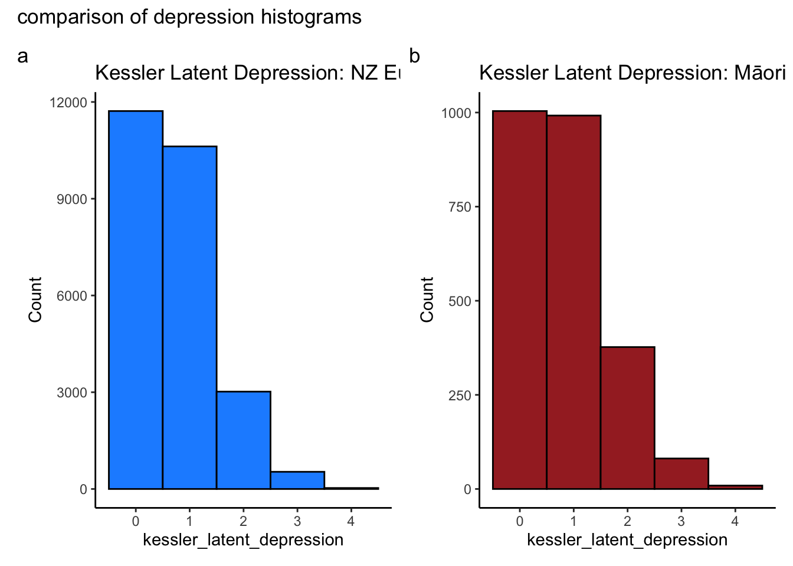
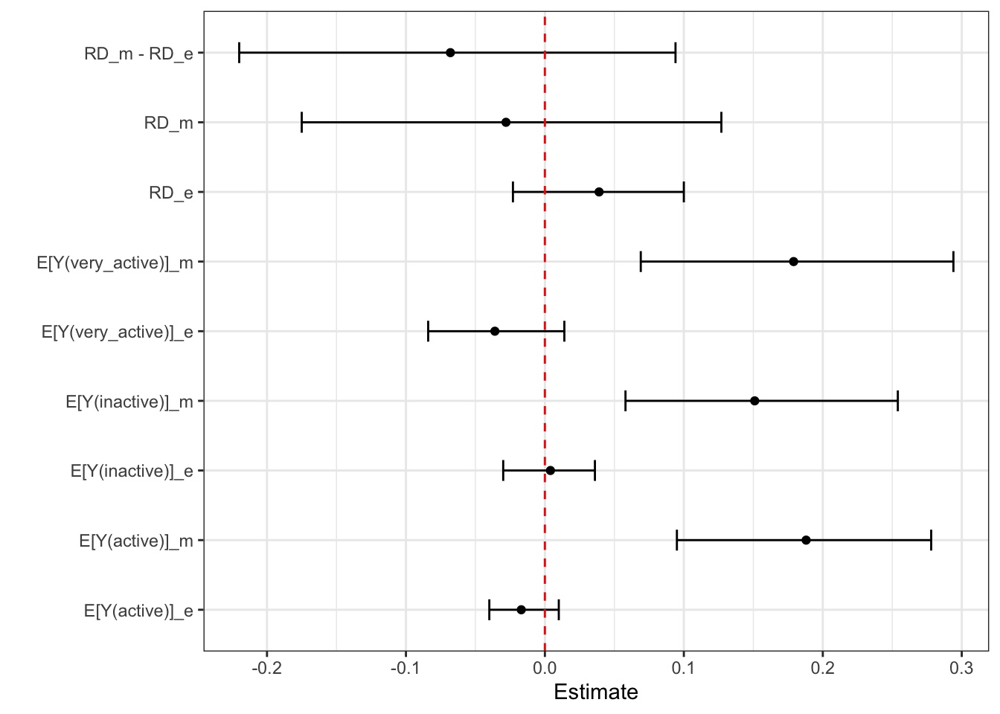

Today, we dive deep into data analysis for causal inference ast it applies to observational cultural psychology. By the end, you will:
Better understand how to integrate measurement theory with causal inference
Enhance your proficiency in causal analysis using doubly robust methods
Gain insights into the application of sensitivity analysis using E-Values
Set up your workspace Preparing for the Journey
To kick things off, we will set up our environment. We’ll source essential functions, load necessary libraries, and import synthetic data for our exploration.
Code
# Before running this source code, make sure to update to the current version of R, and to update all existing packages.# functions source("https://raw.githubusercontent.com/go-bayes/templates/main/functions/funs.R")# experimental functions (more functions)source("https://raw.githubusercontent.com/go-bayes/templates/main/functions/experimental_funs.R")# If you haven't already, you should have created a folder called "data", in your Rstudio project. If not, download this file, add it to your the folder called "data" in your Rstudio project. # "https://www.dropbox.com/s/vwqijg4ha17hbs1/nzavs_dat_synth_t10_t12?dl=0"# A function we will use for our tables. tab_ate_subgroup_rd <-function(x, new_name,delta =1,sd =1) {# Check if required packages are installed required_packages <-c("EValue", "dplyr") new_packages <- required_packages[!(required_packages %in%installed.packages()[, "Package"])]if (length(new_packages))stop("Missing packages: ", paste(new_packages, collapse =", "))require(EValue)require(dplyr)# check if input data is a dataframeif (!is.data.frame(x))stop("Input x must be a dataframe")# Check if required columns are in the dataframe required_cols <-c("estimate", "lower_ci", "upper_ci") missing_cols <- required_cols[!(required_cols %in%colnames(x))]if (length(missing_cols) >0)stop("Missing columns in dataframe: ",paste(missing_cols, collapse =", "))# Check if lower_ci and upper_ci do not contain NA valuesif (any(is.na(x$lower_ci), is.na(x$upper_ci)))stop("Columns 'lower_ci' and 'upper_ci' should not contain NA values") x <- x %>% dplyr::mutate(across(where(is.numeric), round, digits =3)) %>% dplyr::rename("E[Y(1)]-E[Y(0)]"= estimate) x$standard_error <-abs(x$lower_ci - x$upper_ci) /3.92 evalues_list <-lapply(seq_len(nrow(x)), function(i) { row_evalue <- EValue::evalues.OLS( x[i, "E[Y(1)]-E[Y(0)]"],se = x[i, "standard_error"],sd = sd,delta = delta,true =0 )# If E_value is NA, set it to 1if (is.na(row_evalue[2, "lower"])) { row_evalue[2, "lower"] <-1 }if (is.na(row_evalue[2, "upper"])) { row_evalue[2, "upper"] <-1 }data.frame(round(as.data.frame(row_evalue)[2,], 3)) # exclude the NA column }) evalues_df <-do.call(rbind, evalues_list)colnames(evalues_df) <-c("E_Value", "E_Val_bound") tab_p <-cbind(x, evalues_df) tab <- tab_p |>select(c("E[Y(1)]-E[Y(0)]","lower_ci","upper_ci","E_Value","E_Val_bound" ))return(tab)}# extra packages we need# for efa/cfaif (!require(psych)) {install.packages("psych")library("psych")}# for reportingif (!require(parameters)) {install.packages("parameters")library("parameters")}# for graphingif (!require(see)) {install.packages("see")library("see")}# for graphingif (!require(lavaan)) {install.packages("lavaan")library("lavaan")}# for graphingif (!require(datawizard)) {install.packages("datawizard")library("datawizard")}
Import the data
# This will read the synthetic data into Rstudio. Note that the arrow package allows us to have lower memory demands in the storage and retrieval of data.nzavs_synth <- arrow::read_parquet(here::here("data", "nzavs_dat_synth_t10_t12"))
Next, we will inspect column names.
Make sure to familiarise your self with the variable names here
It is alwasy a good idea to plot the data (do on your own time.)
Revisit the checklist
As we delve deeper, it’s essential to remember our checklist:
Clearly state your question.
Explain its relevance.
Ensure your question is causal.
Develop a subgroup analysis question if applicable.
Our discussion today revolves around two main questions:
Does exercise influence anxiety/depression?
Do these effects differ among NZ Europeans and Māori?
While these questions offer a starting point, they lack specificity. We need to clarify:
The amount, regularity, and duration of exercise
The measures of depression to be used
The expected timeline for observing the effects
Remember, we can clarify these by emulating a hypothetical experiment, a concept we call the Target Trial.
Our initial responses will be guided by the NZAVS measure of exercise, focusing on the hours of activity per week, the 1-year effect on Kessler-6 depression after initiating a change in exercise, and a particular emphasis on effect-modification by NZ European and Māori ethnic identification.
This analysis has practical motivation, as the effects of exercise on mental health and possible differences between cultural groups remain largely uncharted territory.
Our initial responses will be guided by the NZAVS measure of exercise, focusing on the hours of activity per week, the 1-year effect on Kessler-6 depression after initiating a change in exercise, and a particular emphasis on effect-modification by NZ European and Māori ethnic identification. This analysis has practical motivation, as the effects of exercise on mental health and possible differences between cultural groups remain largely uncharted territory.
Sculpting the Data: A Hands-On Approach
As we venture further, we’ll perform a series of transformations to shape our data according to our needs. Our process will involve:
Constructing a Kessler 6 average score
Building a Kessler 6 sum score
Coarsening the Exercise score
Consider the ambiguity in the NZAVS exercise question: “During the past week, list ‘Hours spent exercising/physical activity’.” Different people interpret physical activity differently; John may consider any wakeful time as physical activity, while Jane counts only aerobic exercise. Such variation underlines the importance of the consistency assumption in causal inference. But we’ll delve deeper into that later.
For now, let’s transform our indicators.
# create sum score of kessler 6dt_start <- nzavs_synth %>%arrange(id, wave) %>%rowwise() %>%mutate(kessler_6 =mean(sum(# Specify the Kessler scale itemsc( kessler_depressed,# During the last 30 days, how often did you feel so depressed that nothing could cheer you up? kessler_hopeless,# During the last 30 days, how often did you feel hopeless? kessler_nervous,# During the last 30 days, how often did you feel nervous? kessler_effort,# During the last 30 days, how often did you feel that everything was an effort? kessler_restless,# During the last 30 days, how often did you feel restless or fidgety ? kessler_worthless # During the last 30 days, how often did you feel worthless? ) ))) |>mutate(kessler_6_sum =round(sum(c ( kessler_depressed, kessler_hopeless, kessler_nervous, kessler_effort, kessler_restless, kessler_worthless ) ),digits =0)) |>ungroup() |># Coarsen 'hours_exercise' into categoriesmutate(hours_exercise_coarsen =cut( hours_exercise,# Hours spent exercising/ physical activitybreaks =c(-1, 3, 8, 200),labels =c("inactive","active","very_active"),# Define thresholds for categorieslevels =c("(-1,3]", "(3,8]", "(8,200]"),ordered =TRUE ) ) |># Create a binary 'urban' variable based on the 'rural_gch2018' variablemutate(urban =factor(ifelse( rural_gch2018 =="medium_urban_accessibility"|# Define urban condition rural_gch2018 =="high_urban_accessibility","urban",# Label 'urban' if condition is met"rural"# Label 'rural' if condition is not met ) ))
Why do we coarsen the exposure? Recall the consistency assumption of causal inference:
Consistency: Can I interpret what it means to intervene on the exposure? I should be able to.
What is th hypothetical experiment here for change in exercise?
Through data wrangling, we can answer our research questions more effectively by manipulating variables into more meaningful and digestible forms. We imagine an experiment in which people were within one band of the coarsened exercise band and we
These data checks will ensure the accuracy and reliability of our transformations, setting the foundation for solid data analysis.
Code
# do some checkslevels(dt_start$hours_exercise_coarsen)table(dt_start$hours_exercise_coarsen)max(dt_start$hours_exercise)min(dt_start$hours_exercise)# checks# justification for transforming exercise" has a very long tailhist(dt_start$hours_exercise, breaks =1000)# consider only those cases below < or = to 20hist(subset(dt_start, hours_exercise <=20)$hours_exercise)hist(as.numeric(dt_start$hours_exercise_coarsen))
Create variables for the latent factors
Let’s next get the data into shape for analysis. Here we create a variable for the two factors (see Appendix)
# get two factors from datadt_start2 <- dt_start |>arrange(id, wave) |>rowwise() |>mutate(kessler_latent_depression =mean(c(kessler_depressed, kessler_hopeless, kessler_effort), na.rm =TRUE),kessler_latent_anxiety =mean(c(kessler_effort, kessler_nervous, kessler_restless), na.rm =TRUE) ) |>ungroup()
Inspect the data: anxiety
hist(dt_start2$kessler_latent_anxiety, by = dt_start2$eth_cat)
Warning in plot.window(xlim, ylim, "", ...): "by" is not a graphical parameter
Warning in title(main = main, sub = sub, xlab = xlab, ylab = ylab, ...): "by"
is not a graphical parameter
Warning in axis(1, ...): "by" is not a graphical parameter
Warning in axis(2, at = yt, ...): "by" is not a graphical parameter
create_histograms_anxiety <-function(df) {# require patchworklibrary(patchwork)# separate the data by eth_cat df1 <- df %>%filter(eth_cat =="euro") # replace "level_1" with actual level df2 <- df %>%filter(eth_cat =="māori") # replace "level_2" with actual level# create the histograms p1 <-ggplot(df1, aes(x=kessler_latent_anxiety)) +geom_histogram(binwidth =1, fill ="dodgerblue", color ="black") +ggtitle("Kessler Latent Anxiety: NZ Euro") +xlab("kessler_latent_anxiety") +ylab("Count") p2 <-ggplot(df2, aes(x=kessler_latent_anxiety)) +geom_histogram(binwidth =1, fill ="brown", color ="black") +ggtitle("Kessler Latent Anxiety: Māori") +xlab("kessler_latent_anxiety") +ylab("Count")# plot the histograms p1 + p2 +plot_annotation(tag_levels ="a", title ="comparison of anxiety histograms")}create_histograms_anxiety(dt_start2)
create_histograms_depression <-function(df) {# require patchworklibrary(patchwork)# separate the data by eth_cat df11 <- df %>%filter(eth_cat =="euro") # replace "level_1" with actual level df22 <- df %>%filter(eth_cat =="māori") # replace "level_2" with actual level# create the histograms p11 <-ggplot(df11, aes(x=kessler_latent_depression)) +geom_histogram(binwidth =1, fill ="dodgerblue", color ="black") +ggtitle("Kessler Latent Depression: NZ Euro") +xlab("kessler_latent_depression") +ylab("Count") +theme_classic() p22 <-ggplot(df22, aes(x=kessler_latent_depression)) +geom_histogram(binwidth =1, fill ="brown", color ="black") +ggtitle("Kessler Latent Depression: Māori") +xlab("kessler_latent_depression") +ylab("Count") +theme_classic()# plot the histograms p11 + p22 +plot_annotation(tag_levels ="a", title ="comparison of depression histograms")}create_histograms_depression(dt_start2)

What do you make of these histograms?
Investigate assumption of positivity:
Recall the positive assumption:
Positivity: Can we intervene on the exposure at all levels of the covariates? We should be able to.
Not this is just a description of the the summary scores. We do not assess change within indivuals
# select only the baseline year and the exposure year. That will give us change in the exposure. ()dt_exposure <- dt_start2 |># select baseline year and exposure yearfilter(wave =="2018"| wave =="2019") |># select variables of interestselect(id, wave, hours_exercise_coarsen, eth_cat) |># the categorical variable needs to be numeric for us to use msm package to investigate changemutate(hours_exercise_coarsen_n =as.numeric(hours_exercise_coarsen)) |>droplevels()# checkdt_exposure |>tabyl(hours_exercise_coarsen_n, eth_cat, wave )
I’ve written a function called transition_table that will help us assess change in the exposure at the individual level.
# consider people going from active to vary activeout <- msm::statetable.msm(round(hours_exercise_coarsen_n, 0), id, data = dt_exposure)# for a function I wrote to create state tablesstate_names <-c("Inactive", "Somewhat Active", "Active", "Extremely Active")# transition tabletransition_table(out, state_names)
$explanation
[1] "This transition matrix describes the shifts from one state to another between the baseline wave and the following wave. The numbers in the cells represent the number of individuals who transitioned from one state (rows) to another (columns). For example, the cell in the first row and second column shows the number of individuals who transitioned from the first state (indicated by the left-most cell in the row) to the second state. The top left cell shows the number of individuals who remained in the first state."
$table
| From | Inactive | Somewhat Active | Active |
|:---------------:|:--------:|:---------------:|:------:|
| Inactive | 2186 | 1324 | 295 |
| Somewhat Active | 1019 | 2512 | 811 |
| Active | 204 | 668 | 981 |
Next consider Māori only
# Maori onlydt_exposure_maori <- dt_exposure |>filter(eth_cat =="māori")out_m <- msm::statetable.msm(round(hours_exercise_coarsen_n, 0), id, data = dt_exposure_maori)# with this little support we might consider parametric modelst_tab_m<-transition_table( out_m, state_names)#interpretationcat(t_tab_m$explanation)
This transition matrix describes the shifts from one state to another between the baseline wave and the following wave. The numbers in the cells represent the number of individuals who transitioned from one state (rows) to another (columns). For example, the cell in the first row and second column shows the number of individuals who transitioned from the first state (indicated by the left-most cell in the row) to the second state. The top left cell shows the number of individuals who remained in the first state.
print(t_tab_m$table)
| From | Inactive | Somewhat Active | Active |
|:---------------:|:--------:|:---------------:|:------:|
| Inactive | 187 | 108 | 24 |
| Somewhat Active | 92 | 188 | 61 |
| Active | 28 | 58 | 75 |
# filter eurodt_exposure_euro <- dt_exposure |>filter(eth_cat =="euro")# model changeout_e <- msm::statetable.msm(round(hours_exercise_coarsen_n, 0), id, data = dt_exposure_euro)# creat transition table.t_tab_e <-transition_table( out_e, state_names)#interpretationcat(t_tab_e$explanation)
This transition matrix describes the shifts from one state to another between the baseline wave and the following wave. The numbers in the cells represent the number of individuals who transitioned from one state (rows) to another (columns). For example, the cell in the first row and second column shows the number of individuals who transitioned from the first state (indicated by the left-most cell in the row) to the second state. The top left cell shows the number of individuals who remained in the first state.
# tableprint(t_tab_e$table)
| From | Inactive | Somewhat Active | Active |
|:---------------:|:--------:|:---------------:|:------:|
| Inactive | 1843 | 1136 | 259 |
| Somewhat Active | 870 | 2208 | 712 |
| Active | 167 | 583 | 863 |
Overall we find evidence for change in the exposure variable. This suggest that we are ready to proceed with the next step of causal estimation.
Create wide data frame for analysis
Recall, I wrote a function for you that will put the data into temporal order such that measurement of the exposure and outcome appear at baseline, along with a rich set of baseline confounders, the exposure appears in the following wave, and the outcome appears in the wave following the exposure.
Figure 1: Causal graph: three-wave panel design
The graph encodes our assumptions about the world. It is a qualitative instrument to help us understand how to move from our assumptions to decisions about our analysis, in the first instance, the decision about whether to proceed with an analysis.
It is perhaps useful here to stop and consider what does this graph implies.
Question: 1. Does the graph imply unmeasured confounding?
Question 2. If there is unmeasured confounding, should we proceed?
E-value
The minimum strength of association on the risk ratio scale that an unmeasured confounder would need to have with both the exposure and the outcome, conditional on the measured covariates, to fully explain away a specific exposure-outcome association
For example, suppose that the lower bound of the the E-value was 1.3 with the lower bound of the confidence interval = 1.12, we might then write:
With an observed risk ratio of RR=1.3, an unmeasured confounder that was associated with both the outcome and the exposure by a risk ratio of 1.3-fold each (or 30%), above and beyond the measured confounders, could explain away the estimate, but weaker joint confounder associations could not; to move the confidence interval to include the null, an unmeasured confounder that was associated with the outcome and the exposure by a risk ratio of 1.12-fold (or 12%) each could do so, but weaker joint confounder associations could not.
With an observed risk ratio of RR=10.7, an unmeasured confounder that was associated with both the outcome and the exposure by a risk ratio of 20.9-fold each, above and beyond the measured confounders, could explain away the estimate, but weaker joint confounder associations could not; to move the confidence interval to include the null, an unmeasured confounder that was associated with the outcome and the exposure by a risk ratio of 15.5-fold each could do so, but weaker joint confounder associations could not.
Note that in this class, most of the outcomes will be (standardised) continuous outcomes. Here’s a function and LaTeX code to describe the approximation.
This function takes a linear regression coefficient estimate (est), its standard error (se), the standard deviation of the outcome (sd), a contrast of interest in the exposure (delta, which defaults to 1), and a “true” standardized mean difference (true, which defaults to 0). It calculates the odds ratio using the formula from Chinn (2000) and VanderWeele (2017), and then uses this to calculate the E-value.
#| label: evalue_olscompute_evalue_ols <-function(est, se, delta =1, true =0) {# Rescale estimate and SE to reflect a contrast of size delta est <- est / delta se <- se / delta# Compute transformed odds ratio and confidence intervals odds_ratio <-exp(0.91* est) lo <-exp(0.91* est -1.78* se) hi <-exp(0.91* est +1.78* se)# Compute E-Values based on the RR values evalue_point_estimate <- odds_ratio *sqrt(odds_ratio +1) evalue_lower_ci <- lo *sqrt(lo +1)# Return the E-valuesreturn(list(EValue_PointEstimate = evalue_point_estimate,EValue_LowerCI = evalue_lower_ci))}# exampl:# suppose we have an estimate of 0.5, a standard error of 0.1, and a standard deviation of 1.# This would correspond to a half a standard deviation increase in the outcome per unit increase in the exposure.results <-compute_evalue_ols(est =0.5, se =0.1, delta =1)print(results)
With an observed risk ratio of RR=2.92, an unmeasured confounder that was associated with both the outcome and the exposure by a risk ratio of 2.92-fold each, above and beyond the measured confounders, could explain away the estimate, but weaker joint confounder associations could not; to move the confidence interval to include the null, an unmeasured confounder that was associated with the outcome and the exposure by a risk ratio of 2.23-fold each could do so, but weaker joint confounder associations could not.
Note the E-values package will do the computational work for us (note we get slightly different estimates)
Note:
First, the fucntion converts the estimate to an odds ratio:
Odds Ratio Conversion:
(OddsRatio = e^{ })
Then, it calculates the confidence intervals for the odds ratio:
Finally, it calculates the E-value for the point estimate and the lower confidence interval:
E-Values Calculation:
(EValue_{PointEstimate} = OddsRatio + )
(EValue_{LowerCI} = LowerConfidenceInterval + )
[[JB: NEED TO CHECK]]
Generally, best to use the EValue function.
library(EValue)EValue::evalues.OLS(est =0.5, se =0.1, sd =1, delta =1, true =0)
point lower upper
RR 1.576173 1.319166 1.883252
E-values 2.529142 1.968037 NA
############## ############## ############## ############## ############## ############## ############## ############ #### #### CREATE DATA FRAME FOR ANALYSIS #### #### ################## ############## ######## ####################### ############## ############## ############## ############## ############## ############# ########## I have created a function that will put the data into the correct shape. Here are the steps.# Step 1: choose baseline variables (confounders). here we select standard demographic variablees plus personality variables.# Note again that the function will automatically include the baseline exposure and basline outcome in the baseline variable confounder set so you don't need to include these. # here are some plausible baseline confoundersbaseline_vars =c("edu","male","eth_cat","employed","gen_cohort","nz_dep2018", # nz dep"nzsei13", # occupational prestige"partner","parent","pol_orient",# "rural_gch2018","urban", # use the two level urban varaible. "agreeableness","conscientiousness","extraversion","honesty_humility","openness","neuroticism","modesty","religion_identification_level")## Step 2, select the exposure variable. This is the "cause"exposure_var =c("hours_exercise_coarsen")## step 3. select the outcome variable. These are the outcomes.outcome_vars_reflective =c("kessler_latent_anxiety","kessler_latent_depression")# the function "create_wide_data" should be in your environment.# If not, make sure to run the first line of code in this script once more. You may ignore the warnings. or uncomment and run the code below# source("https://raw.githubusercontent.com/go-bayes/templates/main/functions/funs.R")dt_prepare <-create_wide_data(dat_long = dt_start2,baseline_vars = baseline_vars,exposure_var = exposure_var,outcome_vars = outcome_vars_reflective )
Warning: Using an external vector in selections was deprecated in tidyselect 1.1.0.
ℹ Please use `all_of()` or `any_of()` instead.
# Was:
data %>% select(exclude_vars)
# Now:
data %>% select(all_of(exclude_vars))
See <https://tidyselect.r-lib.org/reference/faq-external-vector.html>.
Warning: Using an external vector in selections was deprecated in tidyselect 1.1.0.
ℹ Please use `all_of()` or `any_of()` instead.
# Was:
data %>% select(t0_column_order)
# Now:
data %>% select(all_of(t0_column_order))
See <https://tidyselect.r-lib.org/reference/faq-external-vector.html>.
Descriptive table
Code
# I have created a function that will allow you to take a data frame and# create a tablebaseline_table(dt_prepare, output_format ="markdown")# but it is not very nice. Next up, is a better table
# get data into shapedt_new <- dt_prepare %>%select(starts_with("t0")) %>%rename_all( ~ stringr::str_replace(., "^t0_", "")) %>%mutate(wave =factor(rep("baseline", nrow(dt_prepare)))) |> janitor::clean_names(case ="screaming_snake")# create a formula stringbaseline_vars_names <- dt_new %>%select(-WAVE) %>%colnames()table_baseline_vars <-paste(baseline_vars_names, collapse ="+")formula_string_table_baseline <-paste("~", table_baseline_vars, "|WAVE")table1::table1(as.formula(formula_string_table_baseline),data = dt_new,overall =FALSE)
baseline (N=10000)
EDU
Mean (SD)
5.85 (2.59)
Median [Min, Max]
6.96 [-0.128, 10.1]
MALE
Male
3905 (39.1%)
Not_male
6095 (61.0%)
ETH_CAT
euro
8641 (86.4%)
māori
821 (8.2%)
pacific
190 (1.9%)
asian
348 (3.5%)
EMPLOYED
Mean (SD)
0.836 (0.370)
Median [Min, Max]
1.00 [0, 1.00]
GEN_COHORT
Gen_Silent: born< 1946
166 (1.7%)
Gen Boomers: born >= 1946 & b.< 1965
4257 (42.6%)
GenX: born >=1961 & b.< 1981
3493 (34.9%)
GenY: born >=1981 & b.< 1996
1883 (18.8%)
GenZ: born >= 1996
201 (2.0%)
NZ_DEP2018
Mean (SD)
4.46 (2.65)
Median [Min, Max]
4.01 [0.835, 10.1]
NZSEI13
Mean (SD)
57.0 (16.1)
Median [Min, Max]
61.0 [9.91, 90.1]
PARTNER
Mean (SD)
0.795 (0.404)
Median [Min, Max]
1.00 [0, 1.00]
PARENT
Mean (SD)
0.706 (0.456)
Median [Min, Max]
1.00 [0, 1.00]
POL_ORIENT
Mean (SD)
3.47 (1.40)
Median [Min, Max]
3.09 [0.862, 7.14]
URBAN
rural
1738 (17.4%)
urban
8262 (82.6%)
AGREEABLENESS
Mean (SD)
5.36 (0.986)
Median [Min, Max]
5.48 [0.977, 7.13]
CONSCIENTIOUSNESS
Mean (SD)
5.19 (1.03)
Median [Min, Max]
5.28 [0.938, 7.16]
EXTRAVERSION
Mean (SD)
3.85 (1.21)
Median [Min, Max]
3.80 [0.861, 7.07]
HONESTY_HUMILITY
Mean (SD)
5.52 (1.12)
Median [Min, Max]
5.71 [1.14, 7.15]
OPENNESS
Mean (SD)
5.06 (1.10)
Median [Min, Max]
5.12 [0.899, 7.15]
NEUROTICISM
Mean (SD)
3.41 (1.17)
Median [Min, Max]
3.31 [0.860, 7.08]
MODESTY
Mean (SD)
6.07 (0.860)
Median [Min, Max]
6.24 [2.17, 7.17]
RELIGION_IDENTIFICATION_LEVEL
Mean (SD)
2.19 (2.07)
Median [Min, Max]
1.00 [1.00, 7.00]
HOURS_EXERCISE_COARSEN
inactive
3805 (38.1%)
active
4342 (43.4%)
very_active
1853 (18.5%)
KESSLER_LATENT_ANXIETY
Mean (SD)
1.16 (0.719)
Median [Min, Max]
1.03 [-0.0800, 4.03]
KESSLER_LATENT_DEPRESSION
Mean (SD)
0.744 (0.686)
Median [Min, Max]
0.646 [-0.0871, 4.02]
# another method for making a table# x <- table1::table1(as.formula(formula_string_table_baseline),# data = dt_new,# overall = FALSE)# # some options, see: https://cran.r-project.org/web/packages/kableExtra/vignettes/awesome_table_in_html.html# table1::t1kable(x, format = "html", booktabs = TRUE) |># kable_material(c("striped", "hover"))
We need to do some more data wrangling, alas! Data wrangling is the majority of data analysis. The good news is that R makes wrangling relatively straightforward.
mutate(id = factor(1:nrow(dt_prepare))): This creates a new column called id that has unique identification factors for each row in the dataset. It ranges from 1 to the number of rows in the dataset.
The next mutate operation is used to convert the t0_eth_cat, t0_urban, and t0_gen_cohort variables to factor type, if they are not already.
The filter command is used to subset the dataset to only include rows where the t0_eth_cat is either “euro” or “māori”. The original dataset includes data with four different ethnic categories. This command filters out any row not related to these two groups.
ungroup() ensures that there’s no grouping in the dataframe.
The mutate(across(where(is.numeric), ~ scale(.x), .names = "{col}_z")) step standardizes all numeric columns in the dataset by subtracting the mean and dividing by the standard deviation (a z-score transformation). The resulting columns are renamed to include “_z” at the end of their original names.
The select function is used to keep only specific columns: the id column, any columns that are factors, and any columns that end in “_z”.
The relocate functions re-order columns. The first relocate places the id column at the beginning. The next three relocate functions order the rest of the columns based on their names: those starting with “t0_” are placed before “t1_” columns, and those starting with “t2_” are placed after “t1_” columns.
droplevels() removes unused factor levels in the dataframe.
Finally, skimr::skim(dt) will print out a summary of the data in the dt object using the skimr package. This provides a useful overview of the data, including data types and summary statistics.
This function seems to be part of a data preparation pipeline in a longitudinal or panel analysis, where observations are ordered over time (indicated by t0_, t1_, t2_, etc.).
### ############### SUBGROUP DATA ANALYSIS: DATA WRANGLING ############dt <- dt_prepare|>mutate(id =factor(1:nrow(dt_prepare))) |>mutate(t0_eth_cat =as.factor(t0_eth_cat),t0_urban =as.factor(t0_urban),t0_gen_cohort =as.factor(t0_gen_cohort)) |> dplyr::filter(t0_eth_cat =="euro"| t0_eth_cat =="māori") |># Too few asian and pacificungroup() |># transform numeric variables into z scores (improves estimation) dplyr::mutate(across(where(is.numeric), ~scale(.x), .names ="{col}_z")) %>%# select only factors and numeric values that are z-scoresselect(id, # category is too sparsewhere(is.factor),ends_with("_z"), ) |># tidy data frame so that the columns are ordered by time (useful for more complex models)relocate(id, .before =starts_with("t1_")) |>relocate(starts_with("t0_"), .before =starts_with("t1_")) |>relocate(starts_with("t2_"), .after =starts_with("t1_")) |>droplevels()# view objectskimr::skim(dt)
Data summary
Name
dt
Number of rows
9462
Number of columns
26
_______________________
Column type frequency:
factor
7
numeric
19
________________________
Group variables
None
Variable type: factor
skim_variable
n_missing
complete_rate
ordered
n_unique
top_counts
id
0
1
FALSE
9462
1: 1, 2: 1, 3: 1, 4: 1
t0_male
0
1
FALSE
2
Not: 5767, Mal: 3695
t0_eth_cat
0
1
FALSE
2
eur: 8641, māo: 821
t0_gen_cohort
0
1
TRUE
5
Gen: 4107, Gen: 3311, Gen: 1716, Gen: 164
t0_urban
0
1
FALSE
2
urb: 7762, rur: 1700
t0_hours_exercise_coarsen
0
1
TRUE
3
act: 4131, ina: 3557, ver: 1774
t1_hours_exercise_coarsen
0
1
TRUE
3
act: 4281, ina: 3187, ver: 1994
Variable type: numeric
skim_variable
n_missing
complete_rate
mean
sd
p0
p25
p50
p75
p100
hist
t0_edu_z
0
1
0
1
-2.29
-1.05
0.44
0.82
1.66
▂▃▃▇▂
t0_employed_z
0
1
0
1
-2.26
0.44
0.44
0.44
0.44
▂▁▁▁▇
t0_nz_dep2018_z
0
1
0
1
-1.36
-0.92
-0.16
0.63
2.17
▇▆▆▅▂
t0_nzsei13_z
0
1
0
1
-2.94
-0.75
0.25
0.81
2.07
▁▃▅▇▁
t0_partner_z
0
1
0
1
-1.99
0.50
0.50
0.50
0.50
▂▁▁▁▇
t0_parent_z
0
1
0
1
-1.58
-1.58
0.63
0.63
0.63
▃▁▁▁▇
t0_pol_orient_z
0
1
0
1
-1.87
-1.02
-0.28
0.44
2.62
▇▆▇▅▂
t0_agreeableness_z
0
1
0
1
-4.46
-0.62
0.12
0.68
1.79
▁▁▃▇▆
t0_conscientiousness_z
0
1
0
1
-4.13
-0.65
0.08
0.76
1.91
▁▁▅▇▅
t0_extraversion_z
0
1
0
1
-2.48
-0.71
-0.04
0.72
2.67
▂▆▇▅▁
t0_honesty_humility_z
0
1
0
1
-3.95
-0.69
0.17
0.84
1.45
▁▁▃▆▇
t0_openness_z
0
1
0
1
-3.76
-0.71
0.05
0.81
1.90
▁▂▆▇▅
t0_neuroticism_z
0
1
0
1
-2.18
-0.76
-0.09
0.71
3.14
▃▇▇▃▁
t0_modesty_z
0
1
0
1
-4.67
-0.66
0.19
0.83
1.26
▁▁▂▅▇
t0_religion_identification_level_z
0
1
0
1
-0.56
-0.56
-0.56
-0.08
2.37
▇▁▁▁▂
t0_kessler_latent_anxiety_z
0
1
0
1
-1.72
-0.69
-0.19
0.70
4.01
▇▇▆▁▁
t0_kessler_latent_depression_z
0
1
0
1
-1.21
-0.63
-0.13
0.42
4.83
▇▂▂▁▁
t2_kessler_latent_depression_z
0
1
0
1
-1.23
-0.65
-0.16
0.39
4.75
▇▃▂▁▁
t2_kessler_latent_anxiety_z
0
1
0
1
-1.74
-0.70
-0.20
0.68
3.97
▇▇▆▁▁
# quick cross table#table( dt$t1_hours_exercise_coarsen, dt$t0_eth_cat )# checkshist(dt$t2_kessler_latent_depression_z)hist(dt$t2_kessler_latent_anxiety_z)dt |>tabyl(t0_eth_cat, t1_hours_exercise_coarsen ) |>kbl(format ="markdown")# Visualise missingnessnaniar::vis_miss(dt)# save your dataframe for future use# make dataframedt =as.data.frame(dt)# save datasaveRDS(dt, here::here("data", "dt"))
Propensity scores
Next we generate propensity scores. Instead of modelling the outcome (t2_y) we will model the exposure (t1_x) as predicted by baseline indicators (t0_c) that we assume may be associated with the outcome and the exposure.
The first step is to obtain the baseline variables. note that we must remove “t0_eth_cat” because we are performing separate weighting for each stratum within this variable.
# read data -- you may start here if you need to repeat the analysisdt <-readRDS(here::here("data", "dt"))# get column namesbaseline_vars_reflective_propensity <- dt|> dplyr::select(starts_with("t0"), -t0_eth_cat) |>colnames()# define our exposureX <-"t1_hours_exercise_coarsen"# define subclassesS <-"t0_eth_cat"# Make sure data is in a data frame formatdt <-data.frame(dt)# next we use our trick for creating a formula string, which will reduce our workformula_str_prop <-paste(X,"~",paste(baseline_vars_reflective_propensity, collapse ="+"))# this shows the exposure variable as predicted by the baseline confounders.formula_str_prop
For propensity score analysis, we will try several different approaches. We will want to select the method that produces the best balance.
I typically use ps (classical propensity scores), ebal and energy. The latter two in my experience yeild good balance. Also energy will work with continuous exposures.
# traditional propensity scores-- note we select the ATT and we have a subgroup dt_match_ps <-match_mi_general(data = dt,X = X,baseline_vars = baseline_vars_reflective_propensity,subgroup ="t0_eth_cat",estimand ="ATE",method ="ps")saveRDS(dt_match_ps, here::here("data", "dt_match_ps"))# ebalancedt_match_ebal <-match_mi_general(data = dt,X = X,baseline_vars = baseline_vars_reflective_propensity,subgroup ="t0_eth_cat",estimand ="ATE",method ="ebal")# save outputsaveRDS(dt_match_ebal, here::here("data", "dt_match_ebal"))## energy balance methoddt_match_energy <-match_mi_general(data = dt,X = X,baseline_vars = baseline_vars_reflective_propensity,subgroup ="t0_eth_cat",estimand ="ATE",#focal = "high", # for use with ATTmethod ="energy")saveRDS(dt_match_energy, here::here("data", "dt_match_energy"))
Results, first for Europeans
#dt_match_energy <- readRDS(here::here("data", "dt_match_energy"))dt_match_ebal <-readRDS(here::here("data", "dt_match_ebal"))#dt_match_ps <- readRDS(here::here("data", "dt_match_ps"))# next we inspect balance. "Max.Diff.Adj" should ideally be less than .05, but less than .1 is ok. This is the standardised mean difference. The variance ratio should be less than 2. # note that if the variables are unlikely to influence the outcome we can be less strict. #See: Hainmueller, J. 2012. “Entropy Balancing for Causal Effects: A Multivariate Reweighting Method to Produce Balanced Samples in Observational Studies.” Political Analysis 20 (1): 25–46. https://doi.org/10.1093/pan/mpr025.# Cole SR, Hernan MA. Constructing inverse probability weights for marginal structural models. American Journal of# Epidemiology 2008; 168(6):656–664.# Moving towards best practice when using inverse probability of treatment weighting (IPTW) using the propensity score to estimate causal treatment effects in observational studies# Peter C. Austin, Elizabeth A. Stuart# https://onlinelibrary.wiley.com/doi/10.1002/sim.6607#bal.tab(dt_match_energy$euro) # goodbal.tab(dt_match_ebal$euro) # best
We estimated propensity score analysis using entropy balancing, energy balancing and traditional propensity scores. Of these approaches, entropy balancing provided the best balance. The results indicate an excellent balance across all variables, with Max.Diff.Adj values significantly below the target threshold of 0.05 across a range of binary and continuous baseline confounders, including gender, generation cohort, urban_location, exercise hours (coarsened, baseline), education, employment status, depression, anxiety, and various personality traits. The Max.Diff.Adj values for all variables were well below the target threshold of 0.05, with most variables achieving a Max.Diff.Adj of 0.0001 or lower. This indicates a high level of balance across all treatment pairs.
The effective sample sizes were also adjusted using entropy balancing. The unadjusted sample sizes for the inactive, active, and very active groups were 2880, 3927, and 1834, respectively. After adjustment, the effective sample sizes were reduced to 1855.89, 3659.59, and 1052.01, respectively.
The weight ranges for the inactive, active, and very active groups varied, with the inactive group showing the widest range (0.2310 to 7.0511) and the active group showing the narrowest range (0.5769 to 1.9603). Despite these variations, the coefficient of variation, mean absolute deviation (MAD), and entropy were all within acceptable limits for each group, indicating a good balance of weights.
We also identified the units with the five most extreme weights by group. These units exhibited higher weights compared to the rest of the units in their respective groups, but they did not significantly affect the overall balance of weights.
We plotted these results using love plots, visually confirming both the balance in the propensity score model using entropy balanced weights, and the imbalance in the model that does not adjust for baseline confounders.
Overall, these findings support the use of entropy balancing in propensity score analysis to ensure a balanced distribution of covariates across treatment groups, conditional on the measured covariates included in the model.
Example Summary Maori Propensity scores.
Results:
The entropy balancing method was also the best performing method that was applied to a subgroup analysis of the Māori population. Similar to the NZ European subgroup analysis, the method achieved a high level of balance across all treatment pairs for the Māori subgroup. The Max.Diff.Adj values for all variables were well below the target threshold of 0.05, with most variables achieving a Max.Diff.Adj of 0.0001 or lower. This indicates a high level of balance across all treatment pairs for the Māori subgroup.
The effective sample sizes for the Māori subgroup were also adjusted using entropy balancing. The unadjusted sample sizes for the inactive, active, and very active groups were 307, 354, and 160, respectively. After adjustment, the effective sample sizes were reduced to 220.54, 321.09, and 76.39, respectively
The weight ranges for the inactive, active, and very active groups in the Māori subgroup varied, with the inactive group showing the widest range (0.2213 to 3.8101) and the active group showing the narrowest range (0.3995 to 1.9800). Despite these variations, the coefficient of variation, mean absolute deviation (MAD), and entropy were all within acceptable limits for each group, indicating a good balance of weights.
The study also identified the units with the five most extreme weights by group for the Māori subgroup. These units exhibited higher weights compared to the rest of the units in their respective groups, but they did not significantly affect the overall balance of weights.
In conclusion, the results of the Māori subgroup analysis are consistent with the overall analysis. The entropy balancing method achieved a high level of balance across all treatment pairs, with Max.Diff.Adj values significantly below the target threshold. These findings support the use of entropy balancing in propensity score analysis to ensure a balanced distribution of covariates across treatment groups, even in subgroup analyses.
More data wrangling
Note that we need to attach the weights from the propensity score model back to the data.
However, because our weighting analysis estimates a model for the exposure, we only need to do this analysis once, no matter how many outcomes we investigate. So there’s a little good news.
# prepare nz_euro datadt_ref_e <-subset(dt, t0_eth_cat =="euro") # original data subset only nz europeans# add weightsdt_ref_e$weights <- dt_match_ebal$euro$weights # get weights from the ps matching model,add to data# prepare maori datadt_ref_m <-subset(dt, t0_eth_cat =="māori")# original data subset only maori# add weightsdt_ref_m$weights <- dt_match_ebal$māori$weights # get weights from the ps matching model, add to data# combine data into one data framedt_ref_all <-rbind(dt_ref_e, dt_ref_m) # combine the data into one dataframe.
Anxiety Analysis and Results
Let’s consider a pseudo experiment where someone moves from inactive to active.
We will use doubly robust analysis. This means that we estimate a model using both propensity score weights (obtained using the ebalance algortithm) and regression stratification.
I wrote a function that will caluclate “E-values.” An E-value is defined as the
E-values represent the minimum strength or magnitude of association that an unmeasured confounder would need to have with both treatment and outcome in order to explain the observed effect estimates conditional on measured covariates.
# we do not evaluate to save time### SUBGROUP analysisdf <- dt_ref_allY <-"t2_kessler_latent_anxiety_z"X <-"t1_hours_exercise_coarsen"# already defined abovebaseline_vars = baseline_vars_reflective_propensitytreat_0 ="inactive"treat_1 ="very_active"estimand ="ATE"scale ="RD"nsims =1000family ="gaussian"continuous_X =FALSEsplines =FALSEcores = parallel::detectCores()S ="t0_eth_cat"# not we interact the subclass X treatment X covariatesformula_str <-paste( Y,"~", S,"*","(", X ,"*","(",paste(baseline_vars_reflective_propensity, collapse ="+"),")",")" )# formula_str. # inspect on our own time # fit modelfit_all_all <-glm(as.formula(formula_str),weights = weights,# weights = if (!is.null(weight_var)) weight_var else NULL,family = family,data = df)# simulate coefficientsconflicts_prefer(clarify::sim)sim_model_all <-sim(fit_all_all, n = nsims, vcov ="HC0")# simulate effect as modified in europeanssim_estimand_all_e <-sim_ame( sim_model_all,var = X,cl = cores,subset = t0_eth_cat =="euro",verbose =FALSE)#rm(sim_estimand_all_e)# note contrast of interestsim_estimand_all_e <-transform(sim_estimand_all_e, RD =`E[Y(inactive)]`-`E[Y(very_active)]`)#rm(sim_estimand_all_m)# simulate effect as modified in māorisim_estimand_all_m <-sim_ame( sim_model_all,var = X,cl = cores,subset = t0_eth_cat =="māori",verbose =FALSE)# combine#m(sim_estimand_all_m)sim_estimand_all_m <-transform(sim_estimand_all_m, RD =`E[Y(inactive)]`-`E[Y(very_active)]`)# rearrangenames(sim_estimand_all_e) <-paste(names(sim_estimand_all_e), "e", sep ="_")names(sim_estimand_all_m) <-paste(names(sim_estimand_all_m), "m", sep ="_")est_all_anxiety <-cbind(sim_estimand_all_m, sim_estimand_all_e)est_all_anxiety <-transform(est_all_anxiety, `RD_m - RD_e`= RD_m - RD_e)saveRDS(est_all_anxiety, here::here("data","est_all_anxiety"))# view summary
Warning: There was 1 warning in `dplyr::mutate()`.
ℹ In argument: `across(where(is.numeric), round, digits = 3)`.
Caused by warning:
! The `...` argument of `across()` is deprecated as of dplyr 1.1.0.
Supply arguments directly to `.fns` through an anonymous function instead.
# Previously
across(a:b, mean, na.rm = TRUE)
# Now
across(a:b, \(x) mean(x, na.rm = TRUE))
# note that I made a function to calculate the Evalue, load this with "experimental functions"test_tab <-tab_ate_subgroup_rd(table_estimates_anxiety, delta =1, sd =1)
Confidence interval crosses the true value, so its E-value is 1.
# This table provides estimated levels of depression, in standard deviation units, for different levels of activity for two groups: Māori (indicated by "_m") and NZ Europeans (indicated by "_e").
df_dep_plot_data <- df_dep |>rename( lower_ci =`X2.5..`,upper_ci =`X97.5..`,estimate = Estimate) |>mutate_if(is.numeric, round, 3) plot_sub_forest <-function(df) {require(ggplot2)# Check if required packages are installed required_packages <-c("ggplot2") new_packages <- required_packages[!(required_packages %in%installed.packages()[, "Package"])]if (length(new_packages))stop("Missing packages: ", paste(new_packages, collapse =", "))# Check if required columns are in the dataframe required_cols <-c("estimate", "lower_ci", "upper_ci") missing_cols <- required_cols[!(required_cols %in%colnames(df))]if (length(missing_cols) >0)stop("Missing columns in dataframe: ", paste(missing_cols, collapse =", "))# Order the factor levels by the estimate column in decreasing orderggplot(df, aes(x=estimate, y=factor(row.names(df)))) +geom_point() +geom_errorbarh(aes(xmin = lower_ci, xmax = upper_ci), height=0.3) +geom_vline(xintercept =0, linetype="dashed", color ="red") +theme_bw() +xlab("Estimate") +ylab("")}plot_sub_forest(df_dep_plot_data)

Interpretation
Increase in activity among NZ Europeans would be expected to lower depression, but the effect is not reliable.
Increase in activity among Māori does not reliably affect depression..
No reliable group differences.
Exercises
Generate a Kessler 6 binary score (Not Depressed vs. Moderately or Severely Depressed)
and also:
Create a variable for the log of exercise hour
Take Home: estimate whether exercise causally affects nervousness, using the single item of the kessler 6 score. Briefly write up your results.
Appendix: MG-CFA
CFA for Kessler 6
We have learned how to do confirmatory factor analysis. Let’s put this knowledge to use but clarifying the underlying factor structure of Kessler-6
The code below will:
Load required packages.
Select the Kessler 6 items
Check whether there is sufficient correlation among the variables to support factor analysis.
# select the columns we need. dt_only_k6 <- dt_start |>select(kessler_depressed, kessler_effort,kessler_hopeless, kessler_worthless, kessler_nervous, kessler_restless)# check factor structureperformance::check_factorstructure(dt_only_k6)
# Is the data suitable for Factor Analysis?
- Sphericity: Bartlett's test of sphericity suggests that there is sufficient significant correlation in the data for factor analysis (Chisq(15) = 70564.23, p < .001).
- KMO: The Kaiser, Meyer, Olkin (KMO) overall measure of sampling adequacy suggests that data seems appropriate for factor analysis (KMO = 0.86). The individual KMO scores are: kessler_depressed (0.83), kessler_effort (0.89), kessler_hopeless (0.85), kessler_worthless (0.85), kessler_nervous (0.88), kessler_restless (0.85).
The code below will allow us to explore the factor structure, on the assumption of n = 3 factors.
# exploratory factor analysis# explore a factor structure made of 3 latent variablesefa <- psych::fa(dt_only_k6, nfactors =3) %>%model_parameters(sort =TRUE, threshold ="max")
Loading required namespace: GPArotation
efa
# Rotated loadings from Factor Analysis (oblimin-rotation)
Variable | MR1 | MR2 | MR3 | Complexity | Uniqueness
----------------------------------------------------------------
kessler_depressed | 0.85 | | | 1.01 | 0.33
kessler_worthless | 0.79 | | | 1.00 | 0.35
kessler_hopeless | 0.75 | | | 1.02 | 0.33
kessler_nervous | | 1.00 | | 1.00 | 5.00e-03
kessler_restless | | | 0.69 | 1.02 | 0.52
kessler_effort | | | 0.48 | 1.66 | 0.50
The 3 latent factors (oblimin rotation) accounted for 66.05% of the total variance of the original data (MR1 = 35.14%, MR2 = 17.17%, MR3 = 13.73%).
This output describes an exploratory factor analysis (EFA) with 3 factors conducted on the Kessler 6 (K6) scale data. The K6 scale is used to measure psychological distress.
The analysis identifies three latent factors, labeled MR1, MR2, and MR3, which collectively account for 66.05% of the variance in the K6 data. The factors MR1, MR2, and MR3 explain 35.14%, 17.17%, and 13.73% of the variance respectively.
Factor loadings, indicating the strength and direction of the relationship between the K6 items and the latent factors, are as follows:
Factor MR1 is strongly associated with ‘kessler_depressed’, ‘kessler_worthless’, and ‘kessler_hopeless’ with loadings of 0.85, 0.79, and 0.75 respectively.
Factor MR2 is exclusively linked with ‘kessler_nervous’ with a loading of 1.00.
Factor MR3 relates to ‘kessler_restless’ and ‘kessler_effort’ with loadings of 0.69 and 0.48 respectively.
The ‘Uniqueness’ values show the proportion of each variable’s variance that isn’t shared with the other variables.
The ‘Complexity’ values give a measure of how each item loads on more than one factor. All the items are either loading exclusively on one factor (complexity=1.00) or slightly more than one factor. ‘kessler_effort’ with complexity of 1.66 shows it’s the item most shared between the factors.
The analysis suggests these K6 items measure may measure three somewhat distinct, yet related, factors of psychological distress.
However, the meaning of these factors would need to be interpreted in the context of the variables and the theoretical framework of the study.
Notably, there are many many theoretical frameworks for in measurement theory. Here is a brief description of the different conclusions one might make, depending on one’s preferred theory.
Code
n <-n_factors(dt_only_k6)# plotplot(n) +theme_classic()
Confirmatory factor analysis (ignoring groups)
# first partition the data part_data <- datawizard::data_partition(dt_only_k6, traing_proportion = .07, seed =123)# set up training datatraining <- part_data$p_0.7test <- part_data$test# one factor modelstructure_k6_one <- psych::fa(training, nfactors =1) |>efa_to_cfa()# two factor model modelstructure_k6_two <- psych::fa(training, nfactors =2) |>efa_to_cfa()# three factor modelstructure_k6_three <- psych::fa(training, nfactors =3) %>%efa_to_cfa()# inspect modelsstructure_k6_one
# fit and compare models# one latent modelone_latent <-suppressWarnings(lavaan::cfa(structure_k6_one, data = test))# two latents modeltwo_latents <-suppressWarnings(lavaan::cfa(structure_k6_two, data = test))# three latents modelthree_latents <-suppressWarnings(lavaan::cfa(structure_k6_three, data = test))# compare modelscompare <- performance::compare_performance(one_latent, two_latents, three_latents, verbose =FALSE)# view as html tableas.data.frame(compare) |>kbl(format ="markdown")
Name
Model
Chi2
Chi2_df
p_Chi2
Baseline
Baseline_df
p_Baseline
GFI
AGFI
NFI
NNFI
CFI
RMSEA
RMSEA_CI_low
RMSEA_CI_high
p_RMSEA
RMR
SRMR
RFI
PNFI
IFI
RNI
Loglikelihood
AIC
AIC_wt
BIC
BIC_wt
BIC_adjusted
one_latent
lavaan
1359.7168
14
0
159746.19
21
0
0.9533955
0.9067909
0.9914883
0.9873622
0.9915748
0.1033455
0.0987385
0.1080285
0.0000000
36.00334
0.0493327
0.9872324
0.6609922
0.9915752
0.9915748
-151483.7
302995.3
0
303094.8
0
303050.3
two_latents
lavaan
317.9709
13
0
30915.77
21
0
0.9900793
0.9786322
0.9897149
0.9840541
0.9901287
0.0510548
0.0462789
0.0559908
0.3499758
36.31236
0.0226983
0.9833857
0.6126807
0.9901313
0.9901287
-150962.8
301955.6
1
302062.2
1
302014.5
three_latents
lavaan
747.8723
12
0
20903.30
21
0
0.9763317
0.9447739
0.9642223
0.9383317
0.9647609
0.0825447
0.0775761
0.0876237
0.0000000
37.13824
0.0377955
0.9373890
0.5509842
0.9647761
0.9647609
-151177.7
302387.5
0
302501.2
0
302450.3
This table provides the results of three different Confirmatory Factor Analysis (CFA) models: one that specifies a single latent factor, one that specifies two latent factors, and one that specifies three latent factors. The results include a number of goodness-of-fit statistics, which can be used to assess how well each model fits the data.
One_latent CFA:
This model assumes that there is only one underlying latent factor contributing to all variables. This model has a chi-square statistic of 1359.7 with 14 degrees of freedom, which is highly significant (p<0.001), indicating a poor fit of the model to the data. Other goodness-of-fit indices like GFI, AGFI, NFI, NNFI, and CFI are all high (above 0.9), generally indicating good fit, but these indices can be misleading in the presence of large sample sizes. RMSEA is above 0.1 which indicates a poor fit. The SRMR is less than 0.08 which suggests a good fit, but given the high Chi-square and RMSEA values, we can’t solely rely on this index. The Akaike information criterion (AIC), Bayesian information criterion (BIC) and adjusted BIC are used for comparing models, with lower values indicating better fit.
Two_latents CFA
This model assumes that there are two underlying latent factors. The chi-square statistic is lower than the one-factor model (317.97 with 13 df), suggesting a better fit. The p-value is still less than 0.05, indicating a statistically significant chi-square, which typically suggests a poor fit. However, all other fit indices (GFI, AGFI, NFI, NNFI, and CFI) are above 0.9 and the RMSEA is 0.051, which generally indicate good fit. The SRMR is also less than 0.08 which suggests a good fit. This model has the lowest AIC and BIC values among the three models, indicating the best fit according to these criteria.
Three_latents CFA
This model assumes three underlying latent factors. The chi-square statistic is 747.87 with 12 df, higher than the two-factor model, suggesting a worse fit to the data. Other fit indices such as GFI, AGFI, NFI, NNFI, and CFI are below 0.97 and the RMSEA is 0.083, which generally indicate acceptable but not excellent fit. The SRMR is less than 0.08 which suggests a good fit. The AIC and BIC values are higher than the two-factor model but lower than the one-factor model, indicating a fit that is better than the one-factor model but worse than the two-factor model.
Based on these results, the two-latents model seems to provide the best fit to the data among the three models, according to most of the fit indices and the AIC and BIC. Note, all models have significant chi-square statistics, which suggests some degree of misfit. It’s also important to consider the substantive interpretation of the factors, to make sure the model makes sense theoretically.
Multi-group Confirmatory Factor Analysis
This script runs multi-group confirmatory factor analysis (MG-CFA)
# select needed columns plus 'ethnicity'# filter dataset for only 'euro' and 'maori' ethnic categoriesdt_eth_k6_eth <- dt_start |>filter(eth_cat =="euro"| eth_cat =="maori") |>select(kessler_depressed, kessler_effort,kessler_hopeless, kessler_worthless, kessler_nervous, kessler_restless, eth_cat)# partition the dataset into training and test subsets# stratify by ethnic category to ensure balanced representationpart_data_eth <- datawizard::data_partition(dt_eth_k6_eth, traing_proportion = .07, seed =123, group ="eth_cat")training_eth <- part_data_eth$p_0.7test_eth <- part_data_eth$test# run confirmatory factor analysis (CFA) models for configural invariance across ethnic groups# models specify one, two, and three latent variablesone_latent_eth_configural <-suppressWarnings(lavaan::cfa(structure_k6_one, group ="eth_cat", data = test_eth))two_latents_eth_configural <-suppressWarnings(lavaan::cfa(structure_k6_two, group ="eth_cat", data = test_eth))three_latents_eth_configural <-suppressWarnings(lavaan::cfa(structure_k6_three, group ="eth_cat", data = test_eth))# compare model performances for configural invariancecompare_eth_configural <- performance::compare_performance(one_latent_eth_configural, two_latents_eth_configural, three_latents_eth_configural, verbose =FALSE)# run CFA models for metric invariance, holding factor loadings equal across groups# models specify one, two, and three latent variablesone_latent_eth_metric <-suppressWarnings(lavaan::cfa(structure_k6_one, group ="eth_cat", group.equal ="loadings", data = test_eth))two_latents_eth_metric <-suppressWarnings(lavaan::cfa(structure_k6_two, group ="eth_cat", group.equal ="loadings", data = test_eth))three_latents_eth_metric <-suppressWarnings(lavaan::cfa(structure_k6_three, group ="eth_cat",group.equal ="loadings", data = test_eth))# compare model performances for metric invariancecompare_eth_metric <- performance::compare_performance(one_latent_eth_metric, two_latents_eth_metric, three_latents_eth_metric, verbose =FALSE)# run CFA models for scalar invariance, holding factor loadings and intercepts equal across groups# models specify one, two, and three latent variablesone_latent_eth_scalar <-suppressWarnings(lavaan::cfa(structure_k6_one, group ="eth_cat", group.equal =c("loadings","intercepts"), data = test_eth))two_latents_eth_scalar <-suppressWarnings(lavaan::cfa(structure_k6_two, group ="eth_cat", group.equal =c("loadings","intercepts"), data = test_eth))three_latents_eth_scalar <-suppressWarnings(lavaan::cfa(structure_k6_three, group ="eth_cat",group.equal =c("loadings","intercepts"), data = test_eth))# compare model performances for scalar invariancecompare_eth_scalar <- performance::compare_performance(one_latent_eth_scalar, two_latents_eth_scalar, three_latents_eth_scalar, verbose =FALSE)
Recall, in the context of measurement and factor analysis, the concepts of configural, metric, and scalar invariance relate to the comparability of a measurement instrument, such as a survey or test, across different groups.
We saw in part 1 of this course that these invariance concepts are frequently tested in the context of cross-cultural, multi-group, or longitudinal studies.
Let’s first define these concepts, and then apply them to the context of the Kessler 6 (K6) Distress Scale used among Maori and New Zealand Europeans.
Configural invariance refers to the most basic level of measurement invariance, and it is established when the same pattern of factor loadings and structure is observed across groups. This means that the underlying or “latent” constructs (factors) are defined the same way for different groups. This doesn’t mean the strength of relationship between items and factors (loadings) or the item means (intercepts) are the same, just that the items relate to the same factors in all groups.
In the context of the K6 Distress Scale, configural invariance would suggest that the same six items are measuring the construct of psychological distress in the same way for both Māori and New Zealand Europeans, even though the strength of the relationship between the items and the construct (distress), or the average scores, might differ.
Metric invariance (also known as “weak invariance”) refers to the assumption that factor loadings are equivalent across groups, meaning that the relationship or association between the measured items and their underlying factor is the same in all groups. This is important when comparing the strength of relationships with other variables across groups.
If metric invariance holds for the K6 Distress Scale, this would mean that a unit change in the latent distress factor would correspond to the same change in each item score (e.g., feeling nervous, hopeless, restless, etc.) for both Māori and New Zealand Europeans.
Scalar invariance (also known as “strong invariance”) involves equivalence of both factor loadings and intercepts (item means) across groups. This means that not only are the relationships between the items and the factors the same across groups (as with metric invariance), but also the zero-points or origins of the scales are the same. Scalar invariance is necessary when one wants to compare latent mean scores across groups.
In the context of the K6 Distress Scale, if scalar invariance holds, it would mean that a specific score on the scale would correspond to the same level of the underlying distress factor for both Māori and New Zealand Europeans. It would mean that the groups do not differ systematically in how they interpret and respond to the items. If this holds, one can make meaningful comparisons of distress level between Maori and New Zealand Europeans based on the scale scores.
Note: each of these levels of invariance is a progressively stricter test of the equivalence of the measurement instrument across groups. Demonstrating scalar invariance, for example, also demonstrates configural and metric invariance. On the other hand, failure to demonstrate metric invariance means that scalar invariance also does not hold. These tests are therefore usually conducted in sequence. The results of these tests should be considered when comparing group means or examining the relationship between a scale and other variables across groups.
The table represents the comparison of three multi-group confirmatory factor analysis (CFA) models conducted to test for configural invariance across different ethnic categories (eth_cat). Configural invariance refers to whether the pattern of factor loadings is the same across groups. It’s the most basic form of measurement invariance.
Looking at the results, we can draw the following conclusions:
Chi2 (Chi-square): A lower value suggests a better model fit. In this case, the two_latents_eth_configural model exhibits the lowest Chi2 value, suggesting it has the best fit according to this metric.
GFI (Goodness of Fit Index) and AGFI (Adjusted Goodness of Fit Index): These values range from 0 to 1, with values closer to 1 suggesting a better fit. The two_latents_eth_configural model has the highest GFI and AGFI values, indicating it is the best fit according to these indices.
NFI (Normed Fit Index), NNFI (Non-Normed Fit Index, also called TLI), CFI (Comparative Fit Index): These range from 0 to 1, with values closer to 1 suggesting a better fit. The one_latent_eth_configural model has the highest values, suggesting it is the best fit according to these metrics.
RMSEA (Root Mean Square Error of Approximation): Lower values are better, with values below 0.05 considered good and up to 0.08 considered acceptable. In this table, the two_latents_eth_configural model has an RMSEA of 0.05, which falls within the acceptable range.
RMR (Root Mean Square Residual) and SRMR (Standardized Root Mean Square Residual): Lower values are better, typically less than 0.08 is considered a good fit. All models exhibit acceptable RMR and SRMR values, with the two_latents_eth_configural model having the lowest.
RFI (Relative Fit Index), PNFI (Parsimonious Normed Fit Index), IFI (Incremental Fit Index), RNI (Relative Noncentrality Index): These range from 0 to 1, with values closer to 1 suggesting a better fit. The one_latent_eth_configural model has the highest values, suggesting the best fit according to these measures.
AIC (Akaike Information Criterion) and BIC (Bayesian Information Criterion): Lower values indicate a better fit when comparing models. The two_latents_eth_configural model has the lowest AIC and BIC, suggesting it is the best fit according to these criteria.
p_Chi2 and p_RMSEA: These are the significance levels for the Chi-square test and the RMSEA, respectively. Non-significant values (p > 0.05) suggest a good fit. Only the RMSEA for the two_latents_eth_configural model is non-significant, suggesting a good fit.
Overall, the two_latents_eth_configural model appears to provide the best fit across multiple indices, suggesting configural invariance (i.e., the same general factor structure) across ethnic categories with a two-factor solution. As with the previous assessment, theoretical soundness and other substantive considerations should also be taken into account when deciding on the final model. We will return to these issues next week.
This table presents the results of a multi-group confirmatory factor analysis (CFA) conducted to test metric equivalence (also known as measurement invariance) across different ethnic categories (eth_cat). The models (one_latent_eth_metric, two_latents_eth_metric, three_latents_eth_metric) were run with a constraint of equal factor loadings across groups, which is a requirement for metric invariance.
Here’s the interpretation of the fit indices:
Chi2 (Chi-square): Lower values indicate better model fit. The two_latents_eth_metric model has the lowest Chi2 value, suggesting the best fit according to this measure.
GFI (Goodness of Fit Index), AGFI (Adjusted Goodness of Fit Index): These range from 0 to 1, with values closer to 1 indicating a better fit. The two_latents_eth_metric model has the highest GFI and AGFI values, suggesting the best fit according to these indices.
NFI (Normed Fit Index), NNFI (Non-Normed Fit Index, or TLI), CFI (Comparative Fit Index): These range from 0 to 1, with values closer to 1 indicating a better fit. For these indices, the one_latent_eth_metric model has the highest values, suggesting the best fit according to these measures.
RMSEA (Root Mean Square Error of Approximation): Lower values are better, with values below 0.05 generally considered good, and values up to 0.08 considered acceptable. Only the two_latents_eth_metric model has an RMSEA within the acceptable range (0.051).
RMR (Root Mean Square Residual) and SRMR (Standardized Root Mean Square Residual): Lower values are better, typically less than 0.08 is considered a good fit. All models have acceptable RMR and SRMR values, with the two_latents_eth_metric model having the lowest, indicating the best fit.
RFI (Relative Fit Index), PNFI (Parsimonious Normed Fit Index), IFI (Incremental Fit Index), RNI (Relative Noncentrality Index): These range from 0 to 1, with values closer to 1 indicating better fit. The one_latent_eth_metric model has the highest values, suggesting the best fit according to these indices.
AIC (Akaike Information Criterion) and BIC (Bayesian Information Criterion): Lower values indicate a better fit when comparing models. The two_latents_eth_metric model has the lowest AIC and BIC, indicating the best fit according to these criteria.
p_Chi2 and p_RMSEA: These are the significance levels for the Chi-square test and the RMSEA, respectively. Statistically non-significant values at the traditional threshold (p > 0.05) suggest a good fit. Only the RMSEA for the two_latents_eth_metric model is statistically non-significant, suggesting a good fit.
In summary, the two_latents_eth_metric model appears to provide the best fit overall, indicating that a two-factor solution might be appropriate and that the metric equivalence (equal factor loadings) assumption is supported across ethnic categories. However, one must also take into consideration the theoretical soundness of the model and other substantive considerations when deciding on the final model.
Scalar Equivalence
# view as html tableas.data.frame(compare_eth_scalar)|>kbl(format ="markdown")
Name
Model
Chi2
Chi2_df
p_Chi2
Baseline
Baseline_df
p_Baseline
GFI
AGFI
NFI
NNFI
CFI
RMSEA
RMSEA_CI_low
RMSEA_CI_high
p_RMSEA
RMR
SRMR
RFI
PNFI
IFI
RNI
Loglikelihood
AIC
AIC_wt
BIC
BIC_wt
BIC_adjusted
one_latent_eth_scalar
lavaan
1162.4746
14
0
341229.17
21
0
0.9831752
0.9579381
0.9965933
0.9949511
0.9966341
0.1027048
0.0977499
0.1077479
0.0000000
38.29915
0.0439380
0.9948899
0.6643955
0.9966342
0.9966341
-129452.1
258946.1
0
259092.3
0
259025.5
two_latents_eth_scalar
lavaan
276.7703
13
0
42034.04
21
0
0.9961916
0.9897467
0.9934156
0.9898581
0.9937217
0.0510782
0.0459383
0.0564019
0.3560216
34.17489
0.0201464
0.9893636
0.6149715
0.9937229
0.9937217
-129009.2
258062.4
1
258215.5
1
258145.6
three_latents_eth_scalar
lavaan
701.6287
12
0
27397.50
21
0
0.9906044
0.9725962
0.9743908
0.9559166
0.9748095
0.0859629
0.0806184
0.0914299
0.0000000
76.26852
0.0358868
0.9551839
0.5567947
0.9748177
0.9748095
-129221.6
258489.3
0
258649.3
0
258576.2
The table presents the results of a multi-group confirmatory factor analysis (CFA) conducted to test scalar equivalence (also known as measurement invariance) across different ethnic categories (eth_cat). The models (one_latent_eth_scalar, two_latents_eth_scalar, three_latents_eth_scalar) were run with constraints on both factor loadings and intercepts to be equal across groups, a requirement for scalar invariance.
Here’s the interpretation of the fit indices:
Chi2 (Chi-square): Lower values indicate better model fit. The two_latents_eth_scalar model has the lowest Chi2 value, suggesting the best fit according to this measure.
GFI (Goodness of Fit Index), AGFI (Adjusted Goodness of Fit Index): These range from 0 to 1, with values closer to 1 indicating a better fit. The two_latents_eth_scalar model has the highest GFI and AGFI values, suggesting the best fit according to these indices.
NFI (Normed Fit Index), NNFI (Non-Normed Fit Index, or TLI), CFI (Comparative Fit Index): These range from 0 to 1, with values closer to 1 indicating a better fit. The one_latent_eth_scalar model has the highest values, suggesting the best fit according to these measures.
RMSEA (Root Mean Square Error of Approximation): Lower values are better, with values below 0.05 generally considered good, and values up to 0.08 considered acceptable. Only the two_latents_eth_scalar model has an RMSEA within the acceptable range (0.05).
RMR (Root Mean Square Residual) and SRMR (Standardized Root Mean Square Residual): Lower values are better, typically less than 0.08 is considered a good fit. All models have acceptable RMR and SRMR values, with the two_latents_eth_scalar model having the lowest, indicating the best fit.
RFI (Relative Fit Index), PNFI (Parsimonious Normed Fit Index), IFI (Incremental Fit Index), RNI (Relative Noncentrality Index): These range from 0 to 1, with values closer to 1 indicating better fit. The one_latent_eth_scalar model has the highest values, suggesting the best fit according to these indices.
AIC (Akaike Information Criterion) and BIC (Bayesian Information Criterion): Lower values indicate a better fit when comparing models. The two_latents_eth_scalar model has the lowest AIC and BIC, indicating the best fit according to these criteria.
p_Chi2 and p_RMSEA: These are the significance levels for the Chi-square test and the RMSEA, respectively. Non-significant values (p > 0.05) suggest a good fit. Only the RMSEA for the two_latents_eth_scalar model is non-significant, suggesting a good fit.
In summary, the two_latents_eth_scalar model appears to provide the best fit overall, indicating that a two-factor solution might be appropriate and that the scalar equivalence (equal factor loadings and intercepts) assumption is supported across ethnic categories. However, we must also consider the theoretical soundness of the model and other substantive considerations when deciding on the final model (a matter to which we will return next week.)
Overall it seems that we have good evidence for the two-factor model of Kessler-6.
Solutions
Generate a Kessler 6 binary score (Not Depressed vs. Moderately or Severely Depressed)
and also:
Create a variable for the log of exercise hour
# functions #source("https://raw.githubusercontent.com/go-bayes/templates/main/functions/funs.R")# experimental functions (more functions)#source(# "https://raw.githubusercontent.com/go-bayes/templates/main/functions/experimental_funs.R"#)nzavs_synth <- arrow::read_parquet(here::here("data", "nzavs_dat_synth_t10_t12"))dt_new <- nzavs_synth %>%arrange(id, wave) %>%rowwise() %>%mutate(kessler_6 =mean(sum(# Specify the Kessler scale itemsc( kessler_depressed,# During the last 30 days, how often did you feel so depressed that nothing could cheer you up? kessler_hopeless,# During the last 30 days, how often did you feel hopeless? kessler_nervous,# During the last 30 days, how often did you feel nervous? kessler_effort,# During the last 30 days, how often did you feel that everything was an effort? kessler_restless,# During the last 30 days, how often did you feel restless or fidgety ? kessler_worthless # During the last 30 days, how often did you feel worthless? ) ))) |>mutate(kessler_6_sum =round(sum(c ( kessler_depressed, kessler_hopeless, kessler_nervous, kessler_effort, kessler_restless, kessler_worthless ) ),digits =0)) |>ungroup() |># Create a categorical variable 'kessler_6_coarsen' based on the sum of Kessler scale itemsmutate(kessler_6_coarsen =cut( kessler_6_sum,breaks =c(0, 5, 24),labels =c("not_depressed","mildly_to_severely_depressed"),include.lowest =TRUE,include.highest =TRUE,na.rm =TRUE,right =FALSE ) ) |># Transform 'hours_exercise' by applying the log function to compress its scalemutate(hours_exercise_log =log(hours_exercise +1)) # Add 1 to avoid undefined log(0). Hours spent exercising/physical activity
Take Home: estimate whether exercise causally affects nervousness, using the single item of the kessler 6 score. Briefly write up your results.
To be reviewed next week.
References
VanderWeele, Tyler J, Maya B Mathur, and Ying Chen. 2020. “Outcome-Wide Longitudinal Designs for Causal Inference: A New Template for Empirical Studies.”Statistical Science 35 (3): 437466.
Reuse
MIT
Source Code
---title: "Causal Inference: reconsidering cross-cultural experiments"date: "2023-MAY-23"bibliography: references.bibformat: html: html-math-method: katex warnings: false error: false messages: false highlight-style: dracula code-tools: source: true toggle: false caption: none---## OverviewToday, we dive deep into data analysis for causal inference ast it applies to observational cultural psychology. By the end, you will:- Better understand how to integrate measurement theory with causal inference- Enhance your proficiency in causal analysis using doubly robust methods- Gain insights into the application of sensitivity analysis using E-Values## Set up your workspace Preparing for the JourneyTo kick things off, we will set up our environment. We'll source essential functions, load necessary libraries, and import synthetic data for our exploration.```{r}#| label: load_libraries#| output: false #| code-fold: true# Before running this source code, make sure to update to the current version of R, and to update all existing packages.# functions source("https://raw.githubusercontent.com/go-bayes/templates/main/functions/funs.R")# experimental functions (more functions)source("https://raw.githubusercontent.com/go-bayes/templates/main/functions/experimental_funs.R")# If you haven't already, you should have created a folder called "data", in your Rstudio project. If not, download this file, add it to your the folder called "data" in your Rstudio project. # "https://www.dropbox.com/s/vwqijg4ha17hbs1/nzavs_dat_synth_t10_t12?dl=0"# A function we will use for our tables. tab_ate_subgroup_rd <-function(x, new_name,delta =1,sd =1) {# Check if required packages are installed required_packages <-c("EValue", "dplyr") new_packages <- required_packages[!(required_packages %in%installed.packages()[, "Package"])]if (length(new_packages))stop("Missing packages: ", paste(new_packages, collapse =", "))require(EValue)require(dplyr)# check if input data is a dataframeif (!is.data.frame(x))stop("Input x must be a dataframe")# Check if required columns are in the dataframe required_cols <-c("estimate", "lower_ci", "upper_ci") missing_cols <- required_cols[!(required_cols %in%colnames(x))]if (length(missing_cols) >0)stop("Missing columns in dataframe: ",paste(missing_cols, collapse =", "))# Check if lower_ci and upper_ci do not contain NA valuesif (any(is.na(x$lower_ci), is.na(x$upper_ci)))stop("Columns 'lower_ci' and 'upper_ci' should not contain NA values") x <- x %>% dplyr::mutate(across(where(is.numeric), round, digits =3)) %>% dplyr::rename("E[Y(1)]-E[Y(0)]"= estimate) x$standard_error <-abs(x$lower_ci - x$upper_ci) /3.92 evalues_list <-lapply(seq_len(nrow(x)), function(i) { row_evalue <- EValue::evalues.OLS( x[i, "E[Y(1)]-E[Y(0)]"],se = x[i, "standard_error"],sd = sd,delta = delta,true =0 )# If E_value is NA, set it to 1if (is.na(row_evalue[2, "lower"])) { row_evalue[2, "lower"] <-1 }if (is.na(row_evalue[2, "upper"])) { row_evalue[2, "upper"] <-1 }data.frame(round(as.data.frame(row_evalue)[2,], 3)) # exclude the NA column }) evalues_df <-do.call(rbind, evalues_list)colnames(evalues_df) <-c("E_Value", "E_Val_bound") tab_p <-cbind(x, evalues_df) tab <- tab_p |>select(c("E[Y(1)]-E[Y(0)]","lower_ci","upper_ci","E_Value","E_Val_bound" ))return(tab)}# extra packages we need# for efa/cfaif (!require(psych)) {install.packages("psych")library("psych")}# for reportingif (!require(parameters)) {install.packages("parameters")library("parameters")}# for graphingif (!require(see)) {install.packages("see")library("see")}# for graphingif (!require(lavaan)) {install.packages("lavaan")library("lavaan")}# for graphingif (!require(datawizard)) {install.packages("datawizard")library("datawizard")}```### Import the data```{r}#| label: import data# This will read the synthetic data into Rstudio. Note that the arrow package allows us to have lower memory demands in the storage and retrieval of data.nzavs_synth <- arrow::read_parquet(here::here("data", "nzavs_dat_synth_t10_t12"))```Next, we will inspect column names.Make sure to familiarise your self with the variable names [here](https://github.com/go-bayes/psych-434-2023/blob/main/data/readme.qmd)It is alwasy a good idea to plot the data (do on your own time.)```{r}#| label: colnames#| echo: false#| eval: false#| code-fold: true## use colnames to inspect the variablescolnames(nzavs_synth)# more about the variables here: # https://github.com/go-bayes/psych-434-2023/blob/main/data/readme.qmd```## Revisit the checklistAs we delve deeper, it's essential to remember our checklist:1. Clearly state your question.2. Explain its relevance.3. Ensure your question is causal.4. Develop a subgroup analysis question if applicable.Our discussion today revolves around two main questions:1. Does exercise influence anxiety/depression?2. Do these effects differ among NZ Europeans and Māori?While these questions offer a starting point, they lack specificity. We need to clarify:- The amount, regularity, and duration of exercise- The measures of depression to be used- The expected timeline for observing the effectsRemember, we can clarify these by emulating a hypothetical experiment, a concept we call the **Target Trial**.Our initial responses will be guided by the NZAVS measure of exercise, focusing on the hours of activity per week, the 1-year effect on Kessler-6 depression after initiating a change in exercise, and a particular emphasis on effect-modification by NZ European and Māori ethnic identification.This analysis has practical motivation, as the effects of exercise on mental health and possible differences between cultural groups remain largely uncharted territory.Our initial responses will be guided by the NZAVS measure of exercise, focusing on the hours of activity per week, the 1-year effect on Kessler-6 depression after initiating a change in exercise, and a particular emphasis on effect-modification by NZ European and Māori ethnic identification. This analysis has practical motivation, as the effects of exercise on mental health and possible differences between cultural groups remain largely uncharted territory.### Sculpting the Data: A Hands-On ApproachAs we venture further, we'll perform a series of transformations to shape our data according to our needs. Our process will involve:1. Constructing a Kessler 6 average score2. Building a Kessler 6 sum score3. Coarsening the Exercise scoreConsider the ambiguity in the NZAVS exercise question: "During the past week, list 'Hours spent exercising/physical activity'." Different people interpret physical activity differently; John may consider any wakeful time as physical activity, while Jane counts only aerobic exercise. Such variation underlines the importance of the consistency assumption in causal inference. But we'll delve deeper into that later.For now, let's transform our indicators.```{r}#| label: data_wrangling# create sum score of kessler 6dt_start <- nzavs_synth %>%arrange(id, wave) %>%rowwise() %>%mutate(kessler_6 =mean(sum(# Specify the Kessler scale itemsc( kessler_depressed,# During the last 30 days, how often did you feel so depressed that nothing could cheer you up? kessler_hopeless,# During the last 30 days, how often did you feel hopeless? kessler_nervous,# During the last 30 days, how often did you feel nervous? kessler_effort,# During the last 30 days, how often did you feel that everything was an effort? kessler_restless,# During the last 30 days, how often did you feel restless or fidgety ? kessler_worthless # During the last 30 days, how often did you feel worthless? ) ))) |>mutate(kessler_6_sum =round(sum(c ( kessler_depressed, kessler_hopeless, kessler_nervous, kessler_effort, kessler_restless, kessler_worthless ) ),digits =0)) |>ungroup() |># Coarsen 'hours_exercise' into categoriesmutate(hours_exercise_coarsen =cut( hours_exercise,# Hours spent exercising/ physical activitybreaks =c(-1, 3, 8, 200),labels =c("inactive","active","very_active"),# Define thresholds for categorieslevels =c("(-1,3]", "(3,8]", "(8,200]"),ordered =TRUE ) ) |># Create a binary 'urban' variable based on the 'rural_gch2018' variablemutate(urban =factor(ifelse( rural_gch2018 =="medium_urban_accessibility"|# Define urban condition rural_gch2018 =="high_urban_accessibility","urban",# Label 'urban' if condition is met"rural"# Label 'rural' if condition is not met ) ))```Why do we coarsen the exposure? Recall the consistency assumption of causal inference:**Consistency:** Can I interpret what it means to intervene on the exposure? I should be able to.**What is th hypothetical experiment here for change in exercise?**Through data wrangling, we can answer our research questions more effectively by manipulating variables into more meaningful and digestible forms. We imagine an experiment in which people were within one band of the coarsened exercise band and weThese data checks will ensure the accuracy and reliability of our transformations, setting the foundation for solid data analysis.```{r}#| eval: false#| code-fold: true# do some checkslevels(dt_start$hours_exercise_coarsen)table(dt_start$hours_exercise_coarsen)max(dt_start$hours_exercise)min(dt_start$hours_exercise)# checks# justification for transforming exercise" has a very long tailhist(dt_start$hours_exercise, breaks =1000)# consider only those cases below < or = to 20hist(subset(dt_start, hours_exercise <=20)$hours_exercise)hist(as.numeric(dt_start$hours_exercise_coarsen))```### Create variables for the latent factorsLet's next get the data into shape for analysis. Here we create a variable for the two factors (see Appendix)```{r}#| label: extract_two_factors# get two factors from datadt_start2 <- dt_start |>arrange(id, wave) |>rowwise() |>mutate(kessler_latent_depression =mean(c(kessler_depressed, kessler_hopeless, kessler_effort), na.rm =TRUE),kessler_latent_anxiety =mean(c(kessler_effort, kessler_nervous, kessler_restless), na.rm =TRUE) ) |>ungroup()```Inspect the data: anxiety```{r}#| label: histogram_kessler_anxietyhist(dt_start2$kessler_latent_anxiety, by = dt_start2$eth_cat)create_histograms_anxiety <-function(df) {# require patchworklibrary(patchwork)# separate the data by eth_cat df1 <- df %>%filter(eth_cat =="euro") # replace "level_1" with actual level df2 <- df %>%filter(eth_cat =="māori") # replace "level_2" with actual level# create the histograms p1 <-ggplot(df1, aes(x=kessler_latent_anxiety)) +geom_histogram(binwidth =1, fill ="dodgerblue", color ="black") +ggtitle("Kessler Latent Anxiety: NZ Euro") +xlab("kessler_latent_anxiety") +ylab("Count") p2 <-ggplot(df2, aes(x=kessler_latent_anxiety)) +geom_histogram(binwidth =1, fill ="brown", color ="black") +ggtitle("Kessler Latent Anxiety: Māori") +xlab("kessler_latent_anxiety") +ylab("Count")# plot the histograms p1 + p2 +plot_annotation(tag_levels ="a", title ="comparison of anxiety histograms")}create_histograms_anxiety(dt_start2)``````{r}#| label: histogram_kessler_depressioncreate_histograms_depression <-function(df) {# require patchworklibrary(patchwork)# separate the data by eth_cat df11 <- df %>%filter(eth_cat =="euro") # replace "level_1" with actual level df22 <- df %>%filter(eth_cat =="māori") # replace "level_2" with actual level# create the histograms p11 <-ggplot(df11, aes(x=kessler_latent_depression)) +geom_histogram(binwidth =1, fill ="dodgerblue", color ="black") +ggtitle("Kessler Latent Depression: NZ Euro") +xlab("kessler_latent_depression") +ylab("Count") +theme_classic() p22 <-ggplot(df22, aes(x=kessler_latent_depression)) +geom_histogram(binwidth =1, fill ="brown", color ="black") +ggtitle("Kessler Latent Depression: Māori") +xlab("kessler_latent_depression") +ylab("Count") +theme_classic()# plot the histograms p11 + p22 +plot_annotation(tag_levels ="a", title ="comparison of depression histograms")}create_histograms_depression(dt_start2)```What do you make of these histograms?## Investigate assumption of positivity:Recall the positive assumption:**Positivity:** Can we intervene on the exposure at all levels of the covariates? We should be able to.Not this is just a description of the the summary scores. We do not assess change within indivuals```{r}#| label: prepare_exposure_data# select only the baseline year and the exposure year. That will give us change in the exposure. ()dt_exposure <- dt_start2 |># select baseline year and exposure yearfilter(wave =="2018"| wave =="2019") |># select variables of interestselect(id, wave, hours_exercise_coarsen, eth_cat) |># the categorical variable needs to be numeric for us to use msm package to investigate changemutate(hours_exercise_coarsen_n =as.numeric(hours_exercise_coarsen)) |>droplevels()# checkdt_exposure |>tabyl(hours_exercise_coarsen_n, eth_cat, wave )```I've written a function called `transition_table` that will help us assess change in the exposure at the individual level.```{r}#| label: transition_table# consider people going from active to vary activeout <- msm::statetable.msm(round(hours_exercise_coarsen_n, 0), id, data = dt_exposure)# for a function I wrote to create state tablesstate_names <-c("Inactive", "Somewhat Active", "Active", "Extremely Active")# transition tabletransition_table(out, state_names)```Next consider Māori only```{r}#| label: maori_only_transition# Maori onlydt_exposure_maori <- dt_exposure |>filter(eth_cat =="māori")out_m <- msm::statetable.msm(round(hours_exercise_coarsen_n, 0), id, data = dt_exposure_maori)# with this little support we might consider parametric modelst_tab_m<-transition_table( out_m, state_names)#interpretationcat(t_tab_m$explanation)print(t_tab_m$table)``````{r}#| label: euro_only_transition# filter eurodt_exposure_euro <- dt_exposure |>filter(eth_cat =="euro")# model changeout_e <- msm::statetable.msm(round(hours_exercise_coarsen_n, 0), id, data = dt_exposure_euro)# creat transition table.t_tab_e <-transition_table( out_e, state_names)#interpretationcat(t_tab_e$explanation)# tableprint(t_tab_e$table)```Overall we find evidence for change in the exposure variable. This suggest that we are ready to proceed with the next step of causal estimation.### Create wide data frame for analysisRecall, I wrote a function for you that will put the data into temporal order such that measurement of the exposure and outcome appear at baseline, along with a rich set of baseline confounders, the exposure appears in the following wave, and the outcome appears in the wave following the exposure.```{tikz}#| label: fig-dag-6#| fig-cap: "Causal graph: three-wave panel design"#| out-width: 100%#| echo: false\usetikzlibrary{positioning}\usetikzlibrary{shapes.geometric}\usetikzlibrary{arrows}\usetikzlibrary{decorations}\tikzstyle{Arrow} = [->, thin, preaction = {decorate}]\tikzset{>=latex}\begin{tikzpicture}[{every node/.append style}=draw]\node [rectangle, draw=white] (U) at (0, 0) {U};\node [rectangle, draw=black, align=left] (L) at (2, 0) {t0/L \\t0/A \\t0/Y};\node [rectangle, draw=white] (A) at (4, 0) {t1/A};\node [ellipse, draw=white] (Y) at (6, 0) {t2/Y};\draw [-latex, draw=black] (U) to (L);\draw [-latex, draw=black] (L) to (A);\draw [-latex, draw=red, dotted] (A) to (Y);\draw [-latex, bend left=50, draw =black] (L) to (Y);\draw [-latex, bend right=50, draw =black, dotted] (U) to (Y);\draw [-latex, bend left=50, draw =black, dotted] (U) to (A);\end{tikzpicture}```The graph encodes our assumptions about the world. It is a qualitative instrument to help us understand how to move from our assumptions to decisions about our analysis, in the first instance, the decision about whether to proceed with an analysis.It is perhaps useful here to stop and consider what does this graph implies.Question: 1. Does the graph imply unmeasured confounding?Question 2. If there is unmeasured confounding, should we proceed?### E-value> The minimum strength of association on the risk ratio scale that an unmeasured confounder would need to have with both the exposure and the outcome, conditional on the measured covariates, to fully explain away a specific exposure-outcome associationSee: [@vanderweele2020]For example, suppose that the lower bound of the the E-value was 1.3 with the lower bound of the confidence interval = 1.12, we might then write:> With an observed risk ratio of RR=1.3, an unmeasured confounder that was associated with both the outcome and the exposure by a risk ratio of 1.3-fold each (or 30%), above and beyond the measured confounders, could explain away the estimate, but weaker joint confounder associations could not; to move the confidence interval to include the null, an unmeasured confounder that was associated with the outcome and the exposure by a risk ratio of 1.12-fold (or 12%) each could do so, but weaker joint confounder associations could not.The equations are as follows (for risk ratios)$$E-value_{RR} = RR + \sqrt{RR \times (RR - 1)}$$$$E-value_{LCL} = LCL + \sqrt{LCL \times (LCL - 1)}$$Here is an R function that will calculate E-values```{r}calculate_e_value <-function(rr, lcl) { e_value_rr = rr +sqrt(rr*(rr -1)) e_value_lcl = lcl +sqrt(lcl*(lcl -1))list(e_value_rr = e_value_rr, e_value_lcl = e_value_lcl)}# e.g. smoking causes cancer# finding RR = 10.73 (95% CI: 8.02, 14.36)calculate_e_value(10.73, 8.02)```We write: > With an observed risk ratio of RR=10.7, an unmeasured confounder that was associated with both the outcome and the exposure by a risk ratio of 20.9-fold each, above and beyond the measured confounders, could explain away the estimate, but weaker joint confounder associations could not; to move the confidence interval to include the null, an unmeasured confounder that was associated with the outcome and the exposure by a risk ratio of 15.5-fold each could do so, but weaker joint confounder associations could not.Note that in this class, most of the outcomes will be (standardised) continuous outcomes. Here's a function and LaTeX code to describe the approximation. This function takes a linear regression coefficient estimate (`est`), its standard error (`se`), the standard deviation of the outcome (`sd`), a contrast of interest in the exposure (`delta`, which defaults to 1), and a "true" standardized mean difference (true, which defaults to 0). It calculates the odds ratio using the formula from Chinn (2000) and VanderWeele (2017), and then uses this to calculate the E-value. ```{r}#| label: evalue_olscompute_evalue_ols <-function(est, se, delta =1, true =0) {# Rescale estimate and SE to reflect a contrast of size delta est <- est / delta se <- se / delta# Compute transformed odds ratio and confidence intervals odds_ratio <-exp(0.91* est) lo <-exp(0.91* est -1.78* se) hi <-exp(0.91* est +1.78* se)# Compute E-Values based on the RR values evalue_point_estimate <- odds_ratio *sqrt(odds_ratio +1) evalue_lower_ci <- lo *sqrt(lo +1)# Return the E-valuesreturn(list(EValue_PointEstimate = evalue_point_estimate,EValue_LowerCI = evalue_lower_ci))}# exampl:# suppose we have an estimate of 0.5, a standard error of 0.1, and a standard deviation of 1.# This would correspond to a half a standard deviation increase in the outcome per unit increase in the exposure.results <-compute_evalue_ols(est =0.5, se =0.1, delta =1)print(results)```We write: > With an observed risk ratio of RR=2.92, an unmeasured confounder that was associated with both the outcome and the exposure by a risk ratio of 2.92-fold each, above and beyond the measured confounders, could explain away the estimate, but weaker joint confounder associations could not; to move the confidence interval to include the null, an unmeasured confounder that was associated with the outcome and the exposure by a risk ratio of 2.23-fold each could do so, but weaker joint confounder associations could not.Note the E-values package will do the computational work for us (note we get slightly different estimates)Note: First, the fucntion converts the estimate to an odds ratio:1. **Odds Ratio Conversion**:\(OddsRatio = e^{\frac{Estimate}{SD} \cdot \sqrt{\frac{3}{\pi}}}\)Then, it calculates the confidence intervals for the odds ratio:2. **Confidence Intervals**:\(LowerConfidenceInterval = e^{log(OddsRatio) - 1.78 \cdot SE}\)\(UpperConfidenceInterval = e^{log(OddsRatio) + 1.78 \cdot SE}\)Finally, it calculates the E-value for the point estimate and the lower confidence interval:3. **E-Values Calculation**:\(EValue_{PointEstimate} = OddsRatio + \sqrt{OddsRatio^2 - 1}\)\(EValue_{LowerCI} = LowerConfidenceInterval + \sqrt{LowerConfidenceInterval^2 - 1}\)[[JB: NEED TO CHECK]]Generally, best to use the EValue function.```{r}#| label: evalue-packagelibrary(EValue)EValue::evalues.OLS(est =0.5, se =0.1, sd =1, delta =1, true =0)``````{r}#| table: wide_data############## ############## ############## ############## ############## ############## ############## ############ #### #### CREATE DATA FRAME FOR ANALYSIS #### #### ################## ############## ######## ####################### ############## ############## ############## ############## ############## ############# ########## I have created a function that will put the data into the correct shape. Here are the steps.# Step 1: choose baseline variables (confounders). here we select standard demographic variablees plus personality variables.# Note again that the function will automatically include the baseline exposure and basline outcome in the baseline variable confounder set so you don't need to include these. # here are some plausible baseline confoundersbaseline_vars =c("edu","male","eth_cat","employed","gen_cohort","nz_dep2018", # nz dep"nzsei13", # occupational prestige"partner","parent","pol_orient",# "rural_gch2018","urban", # use the two level urban varaible. "agreeableness","conscientiousness","extraversion","honesty_humility","openness","neuroticism","modesty","religion_identification_level")## Step 2, select the exposure variable. This is the "cause"exposure_var =c("hours_exercise_coarsen")## step 3. select the outcome variable. These are the outcomes.outcome_vars_reflective =c("kessler_latent_anxiety","kessler_latent_depression")# the function "create_wide_data" should be in your environment.# If not, make sure to run the first line of code in this script once more. You may ignore the warnings. or uncomment and run the code below# source("https://raw.githubusercontent.com/go-bayes/templates/main/functions/funs.R")dt_prepare <-create_wide_data(dat_long = dt_start2,baseline_vars = baseline_vars,exposure_var = exposure_var,outcome_vars = outcome_vars_reflective )```## Descriptive table```{r}#| label: simple_table#| eval: false#| code-fold: true# I have created a function that will allow you to take a data frame and# create a tablebaseline_table(dt_prepare, output_format ="markdown")# but it is not very nice. Next up, is a better table``````{r}#| label: table_better# get data into shapedt_new <- dt_prepare %>%select(starts_with("t0")) %>%rename_all( ~ stringr::str_replace(., "^t0_", "")) %>%mutate(wave =factor(rep("baseline", nrow(dt_prepare)))) |> janitor::clean_names(case ="screaming_snake")# create a formula stringbaseline_vars_names <- dt_new %>%select(-WAVE) %>%colnames()table_baseline_vars <-paste(baseline_vars_names, collapse ="+")formula_string_table_baseline <-paste("~", table_baseline_vars, "|WAVE")table1::table1(as.formula(formula_string_table_baseline),data = dt_new,overall =FALSE)# another method for making a table# x <- table1::table1(as.formula(formula_string_table_baseline),# data = dt_new,# overall = FALSE)# # some options, see: https://cran.r-project.org/web/packages/kableExtra/vignettes/awesome_table_in_html.html# table1::t1kable(x, format = "html", booktabs = TRUE) |># kable_material(c("striped", "hover"))```We need to do some more data wrangling, alas! Data wrangling is the majority of data analysis. The good news is that R makes wrangling relatively straightforward.1. `mutate(id = factor(1:nrow(dt_prepare)))`: This creates a new column called `id` that has unique identification factors for each row in the dataset. It ranges from 1 to the number of rows in the dataset.2. The next `mutate` operation is used to convert the `t0_eth_cat`, `t0_urban`, and `t0_gen_cohort` variables to factor type, if they are not already.3. The `filter` command is used to subset the dataset to only include rows where the `t0_eth_cat` is either "euro" or "māori". The original dataset includes data with four different ethnic categories. This command filters out any row not related to these two groups.4. `ungroup()` ensures that there's no grouping in the dataframe.5. The `mutate(across(where(is.numeric), ~ scale(.x), .names = "{col}_z"))` step standardizes all numeric columns in the dataset by subtracting the mean and dividing by the standard deviation (a z-score transformation). The resulting columns are renamed to include "\_z" at the end of their original names.6. The `select` function is used to keep only specific columns: the `id` column, any columns that are factors, and any columns that end in "\_z".7. The `relocate` functions re-order columns. The first `relocate` places the `id` column at the beginning. The next three `relocate` functions order the rest of the columns based on their names: those starting with "t0\_" are placed before "t1\_" columns, and those starting with "t2\_" are placed after "t1\_" columns.8. `droplevels()` removes unused factor levels in the dataframe.9. Finally, `skimr::skim(dt)` will print out a summary of the data in the `dt` object using the skimr package. This provides a useful overview of the data, including data types and summary statistics.This function seems to be part of a data preparation pipeline in a longitudinal or panel analysis, where observations are ordered over time (indicated by t0\_, t1\_, t2\_, etc.).```{r}### ############### SUBGROUP DATA ANALYSIS: DATA WRANGLING ############dt <- dt_prepare|>mutate(id =factor(1:nrow(dt_prepare))) |>mutate(t0_eth_cat =as.factor(t0_eth_cat),t0_urban =as.factor(t0_urban),t0_gen_cohort =as.factor(t0_gen_cohort)) |> dplyr::filter(t0_eth_cat =="euro"| t0_eth_cat =="māori") |># Too few asian and pacificungroup() |># transform numeric variables into z scores (improves estimation) dplyr::mutate(across(where(is.numeric), ~scale(.x), .names ="{col}_z")) %>%# select only factors and numeric values that are z-scoresselect(id, # category is too sparsewhere(is.factor),ends_with("_z"), ) |># tidy data frame so that the columns are ordered by time (useful for more complex models)relocate(id, .before =starts_with("t1_")) |>relocate(starts_with("t0_"), .before =starts_with("t1_")) |>relocate(starts_with("t2_"), .after =starts_with("t1_")) |>droplevels()# view objectskimr::skim(dt)``````{r}#| label: more-data-checks#| eval: false# quick cross table#table( dt$t1_hours_exercise_coarsen, dt$t0_eth_cat )# checkshist(dt$t2_kessler_latent_depression_z)hist(dt$t2_kessler_latent_anxiety_z)dt |>tabyl(t0_eth_cat, t1_hours_exercise_coarsen ) |>kbl(format ="markdown")# Visualise missingnessnaniar::vis_miss(dt)# save your dataframe for future use# make dataframedt =as.data.frame(dt)# save datasaveRDS(dt, here::here("data", "dt"))```## Propensity scoresNext we generate propensity scores. Instead of modelling the outcome (t2_y) we will model the exposure (t1_x) as predicted by baseline indicators (t0_c) that we assume may be associated with the outcome and the exposure.The first step is to obtain the baseline variables. note that we must remove "t0_eth_cat" because we are performing separate weighting for each stratum within this variable.```{r}#| label: propensity_score prepare# read data -- you may start here if you need to repeat the analysisdt <-readRDS(here::here("data", "dt"))# get column namesbaseline_vars_reflective_propensity <- dt|> dplyr::select(starts_with("t0"), -t0_eth_cat) |>colnames()# define our exposureX <-"t1_hours_exercise_coarsen"# define subclassesS <-"t0_eth_cat"# Make sure data is in a data frame formatdt <-data.frame(dt)# next we use our trick for creating a formula string, which will reduce our workformula_str_prop <-paste(X,"~",paste(baseline_vars_reflective_propensity, collapse ="+"))# this shows the exposure variable as predicted by the baseline confounders.formula_str_prop```For propensity score analysis, we will try several different approaches. We will want to select the method that produces the best balance.I typically use `ps` (classical propensity scores), `ebal` and `energy`. The latter two in my experience yeild good balance. Also `energy` will work with *continuous* exposures.For more information, see <https://ngreifer.github.io/WeightIt/>```{r}#| label: propensity_scores#| eval: false# traditional propensity scores-- note we select the ATT and we have a subgroup dt_match_ps <-match_mi_general(data = dt,X = X,baseline_vars = baseline_vars_reflective_propensity,subgroup ="t0_eth_cat",estimand ="ATE",method ="ps")saveRDS(dt_match_ps, here::here("data", "dt_match_ps"))# ebalancedt_match_ebal <-match_mi_general(data = dt,X = X,baseline_vars = baseline_vars_reflective_propensity,subgroup ="t0_eth_cat",estimand ="ATE",method ="ebal")# save outputsaveRDS(dt_match_ebal, here::here("data", "dt_match_ebal"))## energy balance methoddt_match_energy <-match_mi_general(data = dt,X = X,baseline_vars = baseline_vars_reflective_propensity,subgroup ="t0_eth_cat",estimand ="ATE",#focal = "high", # for use with ATTmethod ="energy")saveRDS(dt_match_energy, here::here("data", "dt_match_energy"))```Results, first for Europeans```{r}#| label: results_ps_analysis#| #dt_match_energy <- readRDS(here::here("data", "dt_match_energy"))dt_match_ebal <-readRDS(here::here("data", "dt_match_ebal"))#dt_match_ps <- readRDS(here::here("data", "dt_match_ps"))# next we inspect balance. "Max.Diff.Adj" should ideally be less than .05, but less than .1 is ok. This is the standardised mean difference. The variance ratio should be less than 2. # note that if the variables are unlikely to influence the outcome we can be less strict. #See: Hainmueller, J. 2012. “Entropy Balancing for Causal Effects: A Multivariate Reweighting Method to Produce Balanced Samples in Observational Studies.” Political Analysis 20 (1): 25–46. https://doi.org/10.1093/pan/mpr025.# Cole SR, Hernan MA. Constructing inverse probability weights for marginal structural models. American Journal of# Epidemiology 2008; 168(6):656–664.# Moving towards best practice when using inverse probability of treatment weighting (IPTW) using the propensity score to estimate causal treatment effects in observational studies# Peter C. Austin, Elizabeth A. Stuart# https://onlinelibrary.wiley.com/doi/10.1002/sim.6607#bal.tab(dt_match_energy$euro) # goodbal.tab(dt_match_ebal$euro) # best#bal.tab(dt_match_ps$euro) # not as good# here we show only the best tab, but you should put all information into an appendix```Results for Maori```{r}#| label: balance_tab_maori# who only Ebal#bal.tab(dt_match_energy$māori) # goodbal.tab(dt_match_ebal$māori) # best#bal.tab(dt_match_ps$māori) # not good``````{r}#| label: love_plots# code for summarsum_e <-summary(dt_match_ebal$euro)sum_m <-summary(dt_match_ebal$māori)# summary eurosum_e# summary maorisum_m``````{r}#| label: love_plot_euro#| column: page-rightlove_plot_e <-love.plot(dt_match_ebal$euro,binary ="std",thresholds =c(m = .1))+labs(title ="NZ Euro Weighting: method e-balance")# plotlove_plot_e ``````{r}#| label: love_plot_maori#| column: page-rightlove_plot_m <-love.plot(dt_match_ebal$māori,binary ="std",thresholds =c(m = .1)) +labs(title ="Māori Weighting: method e-balance")# plotlove_plot_m```### Example Summary NZ Euro Propensity scores.*We estimated propensity score analysis using entropy balancing, energy balancing and traditional propensity scores. Of these approaches, entropy balancing provided the best balance. The results indicate an excellent balance across all variables, with Max.Diff.Adj values significantly below the target threshold of 0.05 across a range of binary and continuous baseline confounders, including gender, generation cohort, urban_location, exercise hours (coarsened, baseline), education, employment status, depression, anxiety, and various personality traits. The Max.Diff.Adj values for all variables were well below the target threshold of 0.05, with most variables achieving a Max.Diff.Adj of 0.0001 or lower. This indicates a high level of balance across all treatment pairs.**The effective sample sizes were also adjusted using entropy balancing. The unadjusted sample sizes for the inactive, active, and very active groups were 2880, 3927, and 1834, respectively. After adjustment, the effective sample sizes were reduced to 1855.89, 3659.59, and 1052.01, respectively.**The weight ranges for the inactive, active, and very active groups varied, with the inactive group showing the widest range (0.2310 to 7.0511) and the active group showing the narrowest range (0.5769 to 1.9603). Despite these variations, the coefficient of variation, mean absolute deviation (MAD), and entropy were all within acceptable limits for each group, indicating a good balance of weights.**We also identified the units with the five most extreme weights by group. These units exhibited higher weights compared to the rest of the units in their respective groups, but they did not significantly affect the overall balance of weights.**We plotted these results using love plots, visually confirming both the balance in the propensity score model using entropy balanced weights, and the imbalance in the model that does not adjust for baseline confounders.**Overall, these findings support the use of entropy balancing in propensity score analysis to ensure a balanced distribution of covariates across treatment groups, conditional on the measured covariates included in the model.*### Example Summary Maori Propensity scores.Results:*The entropy balancing method was also the best performing method that was applied to a subgroup analysis of the Māori population. Similar to the NZ European subgroup analysis, the method achieved a high level of balance across all treatment pairs for the Māori subgroup. The Max.Diff.Adj values for all variables were well below the target threshold of 0.05, with most variables achieving a Max.Diff.Adj of 0.0001 or lower. This indicates a high level of balance across all treatment pairs for the Māori subgroup.**The effective sample sizes for the Māori subgroup were also adjusted using entropy balancing. The unadjusted sample sizes for the inactive, active, and very active groups were 307, 354, and 160, respectively. After adjustment, the effective sample sizes were reduced to 220.54, 321.09, and 76.39, respectively**The weight ranges for the inactive, active, and very active groups in the Māori subgroup varied, with the inactive group showing the widest range (0.2213 to 3.8101) and the active group showing the narrowest range (0.3995 to 1.9800). Despite these variations, the coefficient of variation, mean absolute deviation (MAD), and entropy were all within acceptable limits for each group, indicating a good balance of weights.**The study also identified the units with the five most extreme weights by group for the Māori subgroup. These units exhibited higher weights compared to the rest of the units in their respective groups, but they did not significantly affect the overall balance of weights.**In conclusion, the results of the Māori subgroup analysis are consistent with the overall analysis. The entropy balancing method achieved a high level of balance across all treatment pairs, with Max.Diff.Adj values significantly below the target threshold. These findings support the use of entropy balancing in propensity score analysis to ensure a balanced distribution of covariates across treatment groups, even in subgroup analyses.*### More data wranglingNote that we need to attach the `weights` from the propensity score model back to the data.However, because our weighting analysis estimates a model for the *exposure*, we only need to do this analysis once, no matter how many outcomes we investigate. So there's a little good news.```{r}#| label: yet_more_wrangling#| # prepare nz_euro datadt_ref_e <-subset(dt, t0_eth_cat =="euro") # original data subset only nz europeans# add weightsdt_ref_e$weights <- dt_match_ebal$euro$weights # get weights from the ps matching model,add to data# prepare maori datadt_ref_m <-subset(dt, t0_eth_cat =="māori")# original data subset only maori# add weightsdt_ref_m$weights <- dt_match_ebal$māori$weights # get weights from the ps matching model, add to data# combine data into one data framedt_ref_all <-rbind(dt_ref_e, dt_ref_m) # combine the data into one dataframe. ```## Anxiety Analysis and ResultsLet's consider a pseudo experiment where someone moves from inactive to active.We will use doubly robust analysis. This means that we estimate a model using both propensity score weights (obtained using the ebalance algortithm) and regression stratification.I wrote a function that will caluclate "E-values." An E-value is defined as the> E-values represent the minimum strength or magnitude of association that an unmeasured confounder would need to have with both treatment and outcome in order to explain the observed effect estimates conditional on measured covariates.```{r}#| label: model_anxiety#| eval: false# we do not evaluate to save time### SUBGROUP analysisdf <- dt_ref_allY <-"t2_kessler_latent_anxiety_z"X <-"t1_hours_exercise_coarsen"# already defined abovebaseline_vars = baseline_vars_reflective_propensitytreat_0 ="inactive"treat_1 ="very_active"estimand ="ATE"scale ="RD"nsims =1000family ="gaussian"continuous_X =FALSEsplines =FALSEcores = parallel::detectCores()S ="t0_eth_cat"# not we interact the subclass X treatment X covariatesformula_str <-paste( Y,"~", S,"*","(", X ,"*","(",paste(baseline_vars_reflective_propensity, collapse ="+"),")",")" )# formula_str. # inspect on our own time # fit modelfit_all_all <-glm(as.formula(formula_str),weights = weights,# weights = if (!is.null(weight_var)) weight_var else NULL,family = family,data = df)# simulate coefficientsconflicts_prefer(clarify::sim)sim_model_all <-sim(fit_all_all, n = nsims, vcov ="HC0")# simulate effect as modified in europeanssim_estimand_all_e <-sim_ame( sim_model_all,var = X,cl = cores,subset = t0_eth_cat =="euro",verbose =FALSE)#rm(sim_estimand_all_e)# note contrast of interestsim_estimand_all_e <-transform(sim_estimand_all_e, RD =`E[Y(inactive)]`-`E[Y(very_active)]`)#rm(sim_estimand_all_m)# simulate effect as modified in māorisim_estimand_all_m <-sim_ame( sim_model_all,var = X,cl = cores,subset = t0_eth_cat =="māori",verbose =FALSE)# combine#m(sim_estimand_all_m)sim_estimand_all_m <-transform(sim_estimand_all_m, RD =`E[Y(inactive)]`-`E[Y(very_active)]`)# rearrangenames(sim_estimand_all_e) <-paste(names(sim_estimand_all_e), "e", sep ="_")names(sim_estimand_all_m) <-paste(names(sim_estimand_all_m), "m", sep ="_")est_all_anxiety <-cbind(sim_estimand_all_m, sim_estimand_all_e)est_all_anxiety <-transform(est_all_anxiety, `RD_m - RD_e`= RD_m - RD_e)saveRDS(est_all_anxiety, here::here("data","est_all_anxiety"))# view summary```Calculate E-values```{r}#| label: summary_anxiety# read dataest_all_anxiety <-readRDS( here::here("data","est_all_anxiety"))# make dataframedf_anxiety_all <-data.frame( summary(est_all_anxiety) )table_estimates_anxiety <- df_anxiety_all |>filter(row.names(df_anxiety_all) %in%c("RD_m", "RD_e")) |>rename(lower_ci =`X2.5..`,upper_ci =`X97.5..`,estimate = Estimate) |># dplyr::mutate(standard_error = abs(`2.5 %` - `97.5 %`) / 3.92) |> dplyr::mutate(across(where(is.numeric), round, digits =3))# note that I made a function to calculate the Evalue, load this with "experimental functions"test_tab <-tab_ate_subgroup_rd(table_estimates_anxiety, delta =1, sd =1)test_tab |>kbl(format ="markdown")``````{r}df_anxiety_all_plot <- df_anxiety_all |># filter(row.names(df_anxiety_all) %in% c("RD_m - RD_e")) |> rename(lower_ci =`X2.5..`,upper_ci =`X97.5..`,estimate = Estimate) |># dplyr::mutate(standard_error = abs(`2.5 %` - `97.5 %`) / 3.92) |> dplyr::mutate(across(where(is.numeric), round, digits =3)) df_anxiety_all_plotplot_sub_forest(df_anxiety_all_plot)df_anxiety_all_plot|>kbl(format ="html")```## Interpretation- Increase in activity among NZ Europeans would be expected to lower anxiety. - Increase in activity among Māori is not reliable. - No reliable differences in these effects between the groups.## Depression Analysis and Results```{r}#| eval: false### SUBGROUP analysisdf <- dt_ref_allY <-"t2_kessler_latent_depression_z"X <-"t1_hours_exercise_coarsen"# already defined abovebaseline_vars = baseline_vars_reflective_propensitytreat_0 ="inactive"treat_1 ="very_active"estimand ="ATE"scale ="RD"nsims =1000family ="gaussian"continuous_X =FALSEsplines =FALSEcores = parallel::detectCores()S ="t0_eth_cat"# not we interact the subclass X treatment X covariatesformula_str <-paste( Y,"~", S,"*","(", X ,"*","(",paste(baseline_vars_reflective_propensity, collapse ="+"),")",")" )# fit modelfit_all_dep <-glm(as.formula(formula_str),weights = weights,# weights = if (!is.null(weight_var)) weight_var else NULL,family = family,data = df)# coefs <- coef(fit_all_dep)# table(is.na(coefs))# # insight::get_varcov(fit_all_all)# simulate coefficientsconflicts_prefer(clarify::sim)sim_model_all <-sim(fit_all_dep, n = nsims, vcov ="HC1")# simulate effect as modified in europeanssim_estimand_all_e_d <-sim_ame( sim_model_all,var = X,cl = cores,subset = t0_eth_cat =="euro",verbose =FALSE)# note contrast of interestsim_estimand_all_e_d <-transform(sim_estimand_all_e_d, RD =`E[Y(inactive)]`-`E[Y(very_active)]`)# simulate effect as modified in māorisim_estimand_all_m_d <-sim_ame( sim_model_all,var = X,cl = cores,subset = t0_eth_cat =="māori",verbose =FALSE)# combinesim_estimand_all_m_d <-transform(sim_estimand_all_m_d, RD =`E[Y(inactive)]`-`E[Y(very_active)]`)# summary#summary(sim_estimand_all_e_d)#summary(sim_estimand_all_m_d)# rearrangenames(sim_estimand_all_e_d) <-paste(names(sim_estimand_all_e_d), "e", sep ="_")names(sim_estimand_all_m_d) <-paste(names(sim_estimand_all_m_d), "m", sep ="_")est_all_d <-cbind(sim_estimand_all_m_d, sim_estimand_all_e_d)est_all_d <-transform(est_all_d, `RD_m - RD_e`= RD_m - RD_e)saveRDS(est_all_d, here::here("data", "est_all_d"))``````{r}est_all_d <-readRDS( here::here("data", "est_all_d"))# make dataframedf_dep <-data.frame( summary(est_all_d) )table_estimates_depression <- df_dep |>filter(row.names(df_dep) %in%c("RD_m", "RD_e")) |>rename(lower_ci =`X2.5..`,upper_ci =`X97.5..`,estimate = Estimate) |># dplyr::mutate(standard_error = abs(`2.5 %` - `97.5 %`) / 3.92) |> dplyr::mutate(across(where(is.numeric), round, digits =3))# note that I made a function to calculate the Evalue, load this with "experimental functions"table_depression <-tab_ate_subgroup_rd(table_estimates_depression, delta =1, sd =1)table_depression |>kbl(format ="markdown")``````{r}# view summarydf_dep |>mutate_if(is.numeric, round, 3) |>kbl(format ="html")# This table provides estimated levels of depression, in standard deviation units, for different levels of activity for two groups: Māori (indicated by "_m") and NZ Europeans (indicated by "_e").``````{r}#| label: my_graph df_dep_plot_data <- df_dep |>rename( lower_ci =`X2.5..`,upper_ci =`X97.5..`,estimate = Estimate) |>mutate_if(is.numeric, round, 3) plot_sub_forest <-function(df) {require(ggplot2)# Check if required packages are installed required_packages <-c("ggplot2") new_packages <- required_packages[!(required_packages %in%installed.packages()[, "Package"])]if (length(new_packages))stop("Missing packages: ", paste(new_packages, collapse =", "))# Check if required columns are in the dataframe required_cols <-c("estimate", "lower_ci", "upper_ci") missing_cols <- required_cols[!(required_cols %in%colnames(df))]if (length(missing_cols) >0)stop("Missing columns in dataframe: ", paste(missing_cols, collapse =", "))# Order the factor levels by the estimate column in decreasing orderggplot(df, aes(x=estimate, y=factor(row.names(df)))) +geom_point() +geom_errorbarh(aes(xmin = lower_ci, xmax = upper_ci), height=0.3) +geom_vline(xintercept =0, linetype="dashed", color ="red") +theme_bw() +xlab("Estimate") +ylab("")}plot_sub_forest(df_dep_plot_data)```## Interpretation- Increase in activity among NZ Europeans would be expected to lower depression, but the effect is not reliable. - Increase in activity among Māori does not reliably affect depression..- No reliable group differences.## Exercises1. Generate a Kessler 6 binary score (Not Depressed vs. Moderately or Severely Depressed) and also:2. Create a variable for the log of exercise hour3. Take Home: estimate whether exercise causally affects nervousness, using the single item of the kessler 6 score. Briefly write up your results.## Appendix: MG-CFA### CFA for Kessler 6We have learned how to do confirmatory factor analysis. Let's put this knowledge to use but clarifying the underlying factor structure of Kessler-6The code below will:- Load required packages.- Select the Kessler 6 items- Check whether there is sufficient correlation among the variables to support factor analysis.```{r}#| label: cfa_factor_structure# select the columns we need. dt_only_k6 <- dt_start |>select(kessler_depressed, kessler_effort,kessler_hopeless, kessler_worthless, kessler_nervous, kessler_restless)# check factor structureperformance::check_factorstructure(dt_only_k6)```The code below will allow us to explore the factor structure, on the assumption of n = 3 factors.```{r}#| label: efa_made_easy# exploratory factor analysis# explore a factor structure made of 3 latent variablesefa <- psych::fa(dt_only_k6, nfactors =3) %>%model_parameters(sort =TRUE, threshold ="max")efa```This output describes an exploratory factor analysis (EFA) with 3 factors conducted on the Kessler 6 (K6) scale data. The K6 scale is used to measure psychological distress.The analysis identifies three latent factors, labeled MR1, MR2, and MR3, which collectively account for 66.05% of the variance in the K6 data. The factors MR1, MR2, and MR3 explain 35.14%, 17.17%, and 13.73% of the variance respectively.Factor loadings, indicating the strength and direction of the relationship between the K6 items and the latent factors, are as follows:1. Factor MR1 is strongly associated with 'kessler_depressed', 'kessler_worthless', and 'kessler_hopeless' with loadings of 0.85, 0.79, and 0.75 respectively.2. Factor MR2 is exclusively linked with 'kessler_nervous' with a loading of 1.00.3. Factor MR3 relates to 'kessler_restless' and 'kessler_effort' with loadings of 0.69 and 0.48 respectively.The 'Uniqueness' values show the proportion of each variable's variance that isn't shared with the other variables.The 'Complexity' values give a measure of how each item loads on more than one factor. All the items are either loading exclusively on one factor (complexity=1.00) or slightly more than one factor. 'kessler_effort' with complexity of 1.66 shows it's the item most shared between the factors.The analysis suggests these K6 items measure may measure three somewhat distinct, yet related, factors of psychological distress.However, the meaning of these factors would need to be interpreted in the context of the variables and the theoretical framework of the study.Notably, there are many many theoretical frameworks for in measurement theory. Here is a brief description of the different conclusions one might make, depending on one's preferred theory.```{r}#| label: plot_factors#| code-fold: true#| column: page-rightn <-n_factors(dt_only_k6)# plotplot(n) +theme_classic()```### Confirmatory factor analysis (ignoring groups)```{r}#| label: cfa# first partition the data part_data <- datawizard::data_partition(dt_only_k6, traing_proportion = .07, seed =123)# set up training datatraining <- part_data$p_0.7test <- part_data$test# one factor modelstructure_k6_one <- psych::fa(training, nfactors =1) |>efa_to_cfa()# two factor model modelstructure_k6_two <- psych::fa(training, nfactors =2) |>efa_to_cfa()# three factor modelstructure_k6_three <- psych::fa(training, nfactors =3) %>%efa_to_cfa()# inspect modelsstructure_k6_onestructure_k6_twostructure_k6_three```Next we perform the confirmatory factor analysis.```{r}#| label: fit-models# fit and compare models# one latent modelone_latent <-suppressWarnings(lavaan::cfa(structure_k6_one, data = test))# two latents modeltwo_latents <-suppressWarnings(lavaan::cfa(structure_k6_two, data = test))# three latents modelthree_latents <-suppressWarnings(lavaan::cfa(structure_k6_three, data = test))# compare modelscompare <- performance::compare_performance(one_latent, two_latents, three_latents, verbose =FALSE)# view as html tableas.data.frame(compare) |>kbl(format ="markdown")```This table provides the results of three different Confirmatory Factor Analysis (CFA) models: one that specifies a single latent factor, one that specifies two latent factors, and one that specifies three latent factors. The results include a number of goodness-of-fit statistics, which can be used to assess how well each model fits the data.#### One_latent CFA:This model assumes that there is only one underlying latent factor contributing to all variables. This model has a chi-square statistic of 1359.7 with 14 degrees of freedom, which is highly significant (p\<0.001), indicating a poor fit of the model to the data. Other goodness-of-fit indices like GFI, AGFI, NFI, NNFI, and CFI are all high (above 0.9), generally indicating good fit, but these indices can be misleading in the presence of large sample sizes. RMSEA is above 0.1 which indicates a poor fit. The SRMR is less than 0.08 which suggests a good fit, but given the high Chi-square and RMSEA values, we can't solely rely on this index. The Akaike information criterion (AIC), Bayesian information criterion (BIC) and adjusted BIC are used for comparing models, with lower values indicating better fit.#### Two_latents CFAThis model assumes that there are two underlying latent factors. The chi-square statistic is lower than the one-factor model (317.97 with 13 df), suggesting a better fit. The p-value is still less than 0.05, indicating a statistically significant chi-square, which typically suggests a poor fit. However, all other fit indices (GFI, AGFI, NFI, NNFI, and CFI) are above 0.9 and the RMSEA is 0.051, which generally indicate good fit. The SRMR is also less than 0.08 which suggests a good fit. This model has the lowest AIC and BIC values among the three models, indicating the best fit according to these criteria.#### Three_latents CFAThis model assumes three underlying latent factors. The chi-square statistic is 747.87 with 12 df, higher than the two-factor model, suggesting a worse fit to the data. Other fit indices such as GFI, AGFI, NFI, NNFI, and CFI are below 0.97 and the RMSEA is 0.083, which generally indicate acceptable but not excellent fit. The SRMR is less than 0.08 which suggests a good fit. The AIC and BIC values are higher than the two-factor model but lower than the one-factor model, indicating a fit that is better than the one-factor model but worse than the two-factor model.Based on these results, the two-latents model seems to provide the best fit to the data among the three models, according to most of the fit indices and the AIC and BIC. Note, all models have significant chi-square statistics, which suggests some degree of misfit. It's also important to consider the substantive interpretation of the factors, to make sure the model makes sense theoretically.### Multi-group Confirmatory Factor AnalysisThis script runs multi-group confirmatory factor analysis (MG-CFA)```{r}#| label: group_by_cfa# select needed columns plus 'ethnicity'# filter dataset for only 'euro' and 'maori' ethnic categoriesdt_eth_k6_eth <- dt_start |>filter(eth_cat =="euro"| eth_cat =="maori") |>select(kessler_depressed, kessler_effort,kessler_hopeless, kessler_worthless, kessler_nervous, kessler_restless, eth_cat)# partition the dataset into training and test subsets# stratify by ethnic category to ensure balanced representationpart_data_eth <- datawizard::data_partition(dt_eth_k6_eth, traing_proportion = .07, seed =123, group ="eth_cat")training_eth <- part_data_eth$p_0.7test_eth <- part_data_eth$test# run confirmatory factor analysis (CFA) models for configural invariance across ethnic groups# models specify one, two, and three latent variablesone_latent_eth_configural <-suppressWarnings(lavaan::cfa(structure_k6_one, group ="eth_cat", data = test_eth))two_latents_eth_configural <-suppressWarnings(lavaan::cfa(structure_k6_two, group ="eth_cat", data = test_eth))three_latents_eth_configural <-suppressWarnings(lavaan::cfa(structure_k6_three, group ="eth_cat", data = test_eth))# compare model performances for configural invariancecompare_eth_configural <- performance::compare_performance(one_latent_eth_configural, two_latents_eth_configural, three_latents_eth_configural, verbose =FALSE)# run CFA models for metric invariance, holding factor loadings equal across groups# models specify one, two, and three latent variablesone_latent_eth_metric <-suppressWarnings(lavaan::cfa(structure_k6_one, group ="eth_cat", group.equal ="loadings", data = test_eth))two_latents_eth_metric <-suppressWarnings(lavaan::cfa(structure_k6_two, group ="eth_cat", group.equal ="loadings", data = test_eth))three_latents_eth_metric <-suppressWarnings(lavaan::cfa(structure_k6_three, group ="eth_cat",group.equal ="loadings", data = test_eth))# compare model performances for metric invariancecompare_eth_metric <- performance::compare_performance(one_latent_eth_metric, two_latents_eth_metric, three_latents_eth_metric, verbose =FALSE)# run CFA models for scalar invariance, holding factor loadings and intercepts equal across groups# models specify one, two, and three latent variablesone_latent_eth_scalar <-suppressWarnings(lavaan::cfa(structure_k6_one, group ="eth_cat", group.equal =c("loadings","intercepts"), data = test_eth))two_latents_eth_scalar <-suppressWarnings(lavaan::cfa(structure_k6_two, group ="eth_cat", group.equal =c("loadings","intercepts"), data = test_eth))three_latents_eth_scalar <-suppressWarnings(lavaan::cfa(structure_k6_three, group ="eth_cat",group.equal =c("loadings","intercepts"), data = test_eth))# compare model performances for scalar invariancecompare_eth_scalar <- performance::compare_performance(one_latent_eth_scalar, two_latents_eth_scalar, three_latents_eth_scalar, verbose =FALSE)```Recall, in the context of measurement and factor analysis, the concepts of *configural*, *metric*, and *scalar invariance* relate to the comparability of a measurement instrument, such as a survey or test, across different groups.We saw in part 1 of this course that these invariance concepts are frequently tested in the context of cross-cultural, multi-group, or longitudinal studies.Let's first define these concepts, and then apply them to the context of the Kessler 6 (K6) Distress Scale used among Maori and New Zealand Europeans.1. **Configural invariance** refers to the most basic level of measurement invariance, and it is established when the same pattern of factor loadings and structure is observed across groups. This means that the underlying or "latent" constructs (factors) are defined the same way for different groups. This doesn't mean the strength of relationship between items and factors (loadings) or the item means (intercepts) are the same, just that the items relate to the same factors in all groups.In the context of the K6 Distress Scale, configural invariance would suggest that the same six items are measuring the construct of psychological distress in the same way for both Māori and New Zealand Europeans, even though the strength of the relationship between the items and the construct (distress), or the average scores, might differ.2. **Metric invariance** (also known as "weak invariance") refers to the assumption that factor loadings are equivalent across groups, meaning that the relationship or association between the measured items and their underlying factor is the same in all groups. This is important when comparing the strength of relationships with other variables across groups.If metric invariance holds for the K6 Distress Scale, this would mean that a unit change in the latent distress factor would correspond to the same change in each item score (e.g., feeling nervous, hopeless, restless, etc.) for both Māori and New Zealand Europeans.3. **Scalar invariance** (also known as "strong invariance") involves equivalence of both factor loadings and intercepts (item means) across groups. This means that not only are the relationships between the items and the factors the same across groups (as with metric invariance), but also the zero-points or origins of the scales are the same. Scalar invariance is necessary when one wants to compare latent mean scores across groups.In the context of the K6 Distress Scale, if scalar invariance holds, it would mean that a specific score on the scale would correspond to the same level of the underlying distress factor for both Māori and New Zealand Europeans. It would mean that the groups do not differ systematically in how they interpret and respond to the items. If this holds, one can make meaningful comparisons of distress level between Maori and New Zealand Europeans based on the scale scores.Note: each of these levels of invariance is a progressively stricter test of the equivalence of the measurement instrument across groups. Demonstrating scalar invariance, for example, also demonstrates configural and metric invariance. On the other hand, failure to demonstrate metric invariance means that scalar invariance also does not hold. These tests are therefore usually conducted in sequence. The results of these tests should be considered when comparing group means or examining the relationship between a scale and other variables across groups.### Configural invariance```{r}as.data.frame(compare_eth_configural)|>kbl(format ="markdown")```The table represents the comparison of three multi-group confirmatory factor analysis (CFA) models conducted to test for configural invariance across different ethnic categories (eth_cat). Configural invariance refers to whether the pattern of factor loadings is the same across groups. It's the most basic form of measurement invariance.Looking at the results, we can draw the following conclusions:1. **Chi2 (Chi-square)**: A lower value suggests a better model fit. In this case, the two_latents_eth_configural model exhibits the lowest Chi2 value, suggesting it has the best fit according to this metric.2. **GFI (Goodness of Fit Index) and AGFI (Adjusted Goodness of Fit Index)**: These values range from 0 to 1, with values closer to 1 suggesting a better fit. The two_latents_eth_configural model has the highest GFI and AGFI values, indicating it is the best fit according to these indices.3. **NFI (Normed Fit Index), NNFI (Non-Normed Fit Index, also called TLI), CFI (Comparative Fit Index)**: These range from 0 to 1, with values closer to 1 suggesting a better fit. The one_latent_eth_configural model has the highest values, suggesting it is the best fit according to these metrics.4. **RMSEA (Root Mean Square Error of Approximation)**: Lower values are better, with values below 0.05 considered good and up to 0.08 considered acceptable. In this table, the two_latents_eth_configural model has an RMSEA of 0.05, which falls within the acceptable range.5. **RMR (Root Mean Square Residual) and SRMR (Standardized Root Mean Square Residual)**: Lower values are better, typically less than 0.08 is considered a good fit. All models exhibit acceptable RMR and SRMR values, with the two_latents_eth_configural model having the lowest.6. **RFI (Relative Fit Index), PNFI (Parsimonious Normed Fit Index), IFI (Incremental Fit Index), RNI (Relative Noncentrality Index)**: These range from 0 to 1, with values closer to 1 suggesting a better fit. The one_latent_eth_configural model has the highest values, suggesting the best fit according to these measures.7. **AIC (Akaike Information Criterion) and BIC (Bayesian Information Criterion)**: Lower values indicate a better fit when comparing models. The two_latents_eth_configural model has the lowest AIC and BIC, suggesting it is the best fit according to these criteria.8. **p_Chi2 and p_RMSEA**: These are the significance levels for the Chi-square test and the RMSEA, respectively. Non-significant values (p \> 0.05) suggest a good fit. Only the RMSEA for the two_latents_eth_configural model is non-significant, suggesting a good fit.Overall, the two_latents_eth_configural model appears to provide the best fit across multiple indices, suggesting configural invariance (i.e., the same general factor structure) across ethnic categories with a two-factor solution. As with the previous assessment, theoretical soundness and other substantive considerations should also be taken into account when deciding on the final model. We will return to these issues next week.### Metric Equivalence```{r}as.data.frame(compare_eth_metric)|>kbl(format ="markdown")```This table presents the results of a multi-group confirmatory factor analysis (CFA) conducted to test metric equivalence (also known as measurement invariance) across different ethnic categories (eth_cat). The models (one_latent_eth_metric, two_latents_eth_metric, three_latents_eth_metric) were run with a constraint of equal factor loadings across groups, which is a requirement for metric invariance.Here's the interpretation of the fit indices:1. **Chi2 (Chi-square)**: Lower values indicate better model fit. The two_latents_eth_metric model has the lowest Chi2 value, suggesting the best fit according to this measure.2. **GFI (Goodness of Fit Index), AGFI (Adjusted Goodness of Fit Index)**: These range from 0 to 1, with values closer to 1 indicating a better fit. The two_latents_eth_metric model has the highest GFI and AGFI values, suggesting the best fit according to these indices.3. **NFI (Normed Fit Index), NNFI (Non-Normed Fit Index, or TLI), CFI (Comparative Fit Index)**: These range from 0 to 1, with values closer to 1 indicating a better fit. For these indices, the one_latent_eth_metric model has the highest values, suggesting the best fit according to these measures.4. **RMSEA (Root Mean Square Error of Approximation)**: Lower values are better, with values below 0.05 generally considered good, and values up to 0.08 considered acceptable. Only the two_latents_eth_metric model has an RMSEA within the acceptable range (0.051).5. **RMR (Root Mean Square Residual) and SRMR (Standardized Root Mean Square Residual)**: Lower values are better, typically less than 0.08 is considered a good fit. All models have acceptable RMR and SRMR values, with the two_latents_eth_metric model having the lowest, indicating the best fit.6. **RFI (Relative Fit Index), PNFI (Parsimonious Normed Fit Index), IFI (Incremental Fit Index), RNI (Relative Noncentrality Index)**: These range from 0 to 1, with values closer to 1 indicating better fit. The one_latent_eth_metric model has the highest values, suggesting the best fit according to these indices.7. **AIC (Akaike Information Criterion) and BIC (Bayesian Information Criterion)**: Lower values indicate a better fit when comparing models. The two_latents_eth_metric model has the lowest AIC and BIC, indicating the best fit according to these criteria.8. **p_Chi2 and p_RMSEA**: These are the significance levels for the Chi-square test and the RMSEA, respectively. Statistically non-significant values at the traditional threshold (p \> 0.05) suggest a good fit. Only the RMSEA for the two_latents_eth_metric model is statistically non-significant, suggesting a good fit.In summary, the two_latents_eth_metric model appears to provide the best fit overall, indicating that a two-factor solution might be appropriate and that the metric equivalence (equal factor loadings) assumption is supported across ethnic categories. However, one must also take into consideration the theoretical soundness of the model and other substantive considerations when deciding on the final model.### Scalar Equivalence```{r}# view as html tableas.data.frame(compare_eth_scalar)|>kbl(format ="markdown")```The table presents the results of a multi-group confirmatory factor analysis (CFA) conducted to test scalar equivalence (also known as measurement invariance) across different ethnic categories (eth_cat). The models (one_latent_eth_scalar, two_latents_eth_scalar, three_latents_eth_scalar) were run with constraints on both factor loadings and intercepts to be equal across groups, a requirement for scalar invariance.Here's the interpretation of the fit indices:1. **Chi2 (Chi-square)**: Lower values indicate better model fit. The two_latents_eth_scalar model has the lowest Chi2 value, suggesting the best fit according to this measure.2. **GFI (Goodness of Fit Index), AGFI (Adjusted Goodness of Fit Index)**: These range from 0 to 1, with values closer to 1 indicating a better fit. The two_latents_eth_scalar model has the highest GFI and AGFI values, suggesting the best fit according to these indices.3. **NFI (Normed Fit Index), NNFI (Non-Normed Fit Index, or TLI), CFI (Comparative Fit Index)**: These range from 0 to 1, with values closer to 1 indicating a better fit. The one_latent_eth_scalar model has the highest values, suggesting the best fit according to these measures.4. **RMSEA (Root Mean Square Error of Approximation)**: Lower values are better, with values below 0.05 generally considered good, and values up to 0.08 considered acceptable. Only the two_latents_eth_scalar model has an RMSEA within the acceptable range (0.05).5. **RMR (Root Mean Square Residual) and SRMR (Standardized Root Mean Square Residual)**: Lower values are better, typically less than 0.08 is considered a good fit. All models have acceptable RMR and SRMR values, with the two_latents_eth_scalar model having the lowest, indicating the best fit.6. **RFI (Relative Fit Index), PNFI (Parsimonious Normed Fit Index), IFI (Incremental Fit Index), RNI (Relative Noncentrality Index)**: These range from 0 to 1, with values closer to 1 indicating better fit. The one_latent_eth_scalar model has the highest values, suggesting the best fit according to these indices.7. **AIC (Akaike Information Criterion) and BIC (Bayesian Information Criterion)**: Lower values indicate a better fit when comparing models. The two_latents_eth_scalar model has the lowest AIC and BIC, indicating the best fit according to these criteria.8. **p_Chi2 and p_RMSEA**: These are the significance levels for the Chi-square test and the RMSEA, respectively. Non-significant values (p \> 0.05) suggest a good fit. Only the RMSEA for the two_latents_eth_scalar model is non-significant, suggesting a good fit.In summary, the two_latents_eth_scalar model appears to provide the best fit overall, indicating that a two-factor solution might be appropriate and that the scalar equivalence (equal factor loadings and intercepts) assumption is supported across ethnic categories. However, we must also consider the theoretical soundness of the model and other substantive considerations when deciding on the final model (a matter to which we will return next week.)Overall it seems that we have good evidence for the two-factor model of Kessler-6.## Solutions1. Generate a Kessler 6 binary score (Not Depressed vs. Moderately or Severely Depressed) and also:2. Create a variable for the log of exercise hour```{r}#| label: exercise_1_2# functions #source("https://raw.githubusercontent.com/go-bayes/templates/main/functions/funs.R")# experimental functions (more functions)#source(# "https://raw.githubusercontent.com/go-bayes/templates/main/functions/experimental_funs.R"#)nzavs_synth <- arrow::read_parquet(here::here("data", "nzavs_dat_synth_t10_t12"))dt_new <- nzavs_synth %>%arrange(id, wave) %>%rowwise() %>%mutate(kessler_6 =mean(sum(# Specify the Kessler scale itemsc( kessler_depressed,# During the last 30 days, how often did you feel so depressed that nothing could cheer you up? kessler_hopeless,# During the last 30 days, how often did you feel hopeless? kessler_nervous,# During the last 30 days, how often did you feel nervous? kessler_effort,# During the last 30 days, how often did you feel that everything was an effort? kessler_restless,# During the last 30 days, how often did you feel restless or fidgety ? kessler_worthless # During the last 30 days, how often did you feel worthless? ) ))) |>mutate(kessler_6_sum =round(sum(c ( kessler_depressed, kessler_hopeless, kessler_nervous, kessler_effort, kessler_restless, kessler_worthless ) ),digits =0)) |>ungroup() |># Create a categorical variable 'kessler_6_coarsen' based on the sum of Kessler scale itemsmutate(kessler_6_coarsen =cut( kessler_6_sum,breaks =c(0, 5, 24),labels =c("not_depressed","mildly_to_severely_depressed"),include.lowest =TRUE,include.highest =TRUE,na.rm =TRUE,right =FALSE ) ) |># Transform 'hours_exercise' by applying the log function to compress its scalemutate(hours_exercise_log =log(hours_exercise +1)) # Add 1 to avoid undefined log(0). Hours spent exercising/physical activity```3. Take Home: estimate whether exercise causally affects nervousness, using the single item of the kessler 6 score. Briefly write up your results.*To be reviewed next week.*
![]()